Describing data and published tables
Source:vignettes/describing-data-and-tables.Rmd
describing-data-and-tables.RmdLook at the data first
A capsule is only worth pinning if somebody looked at the data first. Looking is the step that gets skipped, because it is tedious and because it is never obviously necessary until afterwards.
This vignette is the short version of looking.
One command
cpsrpt() runs the checks this package provides and puts
the findings in one place, worst first.
reference <- data.frame(
id = 1:300,
score = stats::runif(300, 0, 10),
grade = sample(c("a", "b", "c"), 300, TRUE),
stringsAsFactors = FALSE
)
fresh <- reference
fresh$score <- stats::runif(300, 0, 10)
cpsrpt(fresh, ref = reference,
schema = infsch(reference))
#> ── Capsule report ────────────────────────────────────────────────
#> ✓ these checks found nothing
#>
#> rows 300
#> columns 3
#> missing cells 0.0%
#> complete rows 100.0%
#> digest 6037a08fc090f81243bc07b5094099e0
#>
#> No finding is proof of correctness: each check has a
#> stated blind spot, and a small sample has little power.
#> ──────────────────────────────────────────────────────────────────Now a fetch that went wrong in four different ways at once — a rescaled column, a category nobody expected, a column that arrived empty, and one that arrived constant:
broken <- fresh
broken$score <- broken$score * 5
broken$grade[1:100] <- "z"
broken$dead <- NA_real_
broken$flat <- 7
report <- cpsrpt(broken, ref = reference,
schema = infsch(reference))
report
#> ── Capsule report ────────────────────────────────────────────────
#> ✗ WARNINGS: something moved
#>
#> rows 300
#> columns 5
#> missing cells 20.0%
#> complete rows 0.0%
#> digest a70671d4bd03067f631d54ce3143d9a2
#>
#> ── Findings (8) ──────────────────────────────────────────────────
#> ✗ warn drift grade categorical test, p = <2e-16
#> ✗ warn drift score numeric test, p = <2e-16
#> ✗ warn missing dead column(s) entirely missing
#> ✗ warn schema range_score Column 'score' has 226 value(s) outside [-0.8488307, 10.90645]
#> ✗ warn schema unexpected_grade Column 'grade' has unexpected values: z
#> ! note drift dead, flat column(s) not in the reference
#> ! note missing dead a contiguous run of 300 missing values from row 1 -- one outage rather than scattered failures
#> ! note shape flat constant: no information, and it breaks anything scaled by variance
#> ──────────────────────────────────────────────────────────────────
report$verdict
#> [1] "warn"
summary(report)
#> verdict fatal warn note
#> "warn" "0" "5" "3"Each problem is reported once. An entirely missing column is missing, is trivially constant, and makes any covariance singular — reporting all three would bury the findings that matter under a single cause.
rptmd() writes the same assessment beside the capsule it
describes, so it outlives the console.
cat(head(rptmd(report), 12), sep = "\n")
#> # Capsule report
#>
#> **Warnings** -- something moved.
#>
#> | | |
#> |---|---|
#> | rows | 300 |
#> | columns | 5 |
#> | missing cells | 20.0% |
#> | complete rows | 0.0% |
#> | data digest | `a70671d4bd03067f631d54ce3143d9a29a498637315736cf2770ec5777746c33` |Per column
profcols() is the underlying description. It reports the
classical and robust centre side by side, which is the cheapest outlier
detector there is: where a mean and a median disagree, the mean is not
describing the column.
messy <- data.frame(
clean = stats::rnorm(200),
bimodal = c(stats::rnorm(100, -3), stats::rnorm(100, 3)),
skewed = c(stats::rexp(199), 500),
zeros = c(rep(0, 50), stats::runif(150))
)
profcols(messy)[, c("column", "mean", "median", "sd", "mad")]
#> column mean median sd mad
#> 1 clean -0.109165485 -0.1445507 1.0340169 1.0397160
#> 2 bimodal -0.006117203 -0.2014852 3.2205494 4.4949028
#> 3 skewed 3.633870943 0.7332377 35.2946592 0.8114156
#> 4 zeros 0.342795696 0.2656884 0.3197161 0.3939096The hist column carries what no single number can:
profcols(messy)[, c("column", "hist")]
#> column hist
#> 1 clean ▁▂▃▇█▇▇▃▃▁
#> 2 bimodal ▂▆▆▅ ▂▄█▄▁
#> 3 skewed █ ▁
#> 4 zeros █▃▂▂▂▂▂▃▁▂bimodal is visibly two humps. Its mean and median agree
perfectly and tell you nothing about that.
Where the gaps are
The rate of missingness is the least interesting thing about it. Two frames with identical per-column rates can need completely different handling:
structural <- data.frame(
id = 1:20,
a = c(rep(NA, 6), 7:20),
b = c(rep(NA, 6), 7:20)
)
scattered <- data.frame(
id = 1:20,
a = c(rep(NA, 6), 7:20),
b = c(1:14, rep(NA, 6))
)
c(structural = sum(is.na(structural$a)), scattered = sum(is.na(scattered$a)))
#> structural scattered
#> 6 6
misspat(structural)
#> ── Missingness patterns ──────────────────────────────────────────
#> columns, in pattern order: id, a, b
#>
#> pattern n_rows pctrows n_missing columns
#> ... 14 70.0 0
#> .XX 6 30.0 2 a, b
#> ──────────────────────────────────────────────────────────────────
misspat(scattered)
#> ── Missingness patterns ──────────────────────────────────────────
#> columns, in pattern order: id, a, b
#>
#> pattern n_rows pctrows n_missing columns
#> ... 8 40.0 0
#> ..X 6 30.0 1 b
#> .X. 6 30.0 1 a
#> ──────────────────────────────────────────────────────────────────Two patterns against three. In the first, one structural gap took out both columns in the same rows — those rows are a different population, and often belong dropped or modelled separately. In the second the failures are independent.
missruns() answers a different question again — whether
a gap is one outage or many failures:
missruns(data.frame(
outage = c(1, 2, rep(NA, 8), 11:20),
sporadic = c(1, NA, 3, NA, 5, NA, 7:20)
), minrun = 2)
#> ── Runs of consecutive missing values ────────────────────────────
#> column start end length
#> outage 3 10 8
#> ──────────────────────────────────────────────────────────────────And missgrid() shows the whole table at once, with no
graphics device, so it works over SSH and inside a plain-text
summary:
gappy <- data.frame(
complete = 1:100,
early = c(rep(NA, 30), 31:100),
random = ifelse(stats::runif(100) < 0.3, NA, 1),
late = c(1:70, rep(NA, 30))
)
missgrid(gappy, height = 10)
#> ── Missingness map ───────────────────────────────────────────────
#> cerl
#> oaaa
#> mrnt
#> plde
#> lyo
#> em
#> t
#> e
#> 1 █░
#> 11 █░
#> 21 █▒
#> 31
#> 41 ░
#> 51 ▒
#> 61
#> 71 ░█
#> 81 ░█
#> 91 █
#>
#> legend: ' ' none '█' all missing
#> ──────────────────────────────────────────────────────────────────Is the missingness itself a problem?
Dropping incomplete rows is unbiased only if the data are missing completely at random. Otherwise the complete cases are a biased sample and every downstream estimate inherits the bias.
mcartst() is Little’s test for that assumption. It needs
maximum-likelihood estimates of the mean and covariance under
missingness, which have no closed form, so it carries an EM
estimator.
n <- 400
x <- stats::rnorm(n)
y <- x + stats::rnorm(n)
# Missing on a coin flip: nothing to find.
mcar <- data.frame(x = x, y = y)
mcar$y[sample(n, 120)] <- NA
mcartst(mcar)
#> ── Little's MCAR test ────────────────────────────────────────────
#> ✓ no departure from MCAR detected
#>
#> statistic 0.817
#> df 1
#> p-value 0.366
#> patterns 2
#> variables 2
#> rows used 400
#> EM iterations 12
#>
#> Not evidence OF MCAR: a large p-value is a failure to detect a
#> departure, and this test has little power on small samples.
#> ──────────────────────────────────────────────────────────────────
# Missing whenever x is large: the complete cases are a biased sample,
# and that is detectable because the pattern's mean of x is shifted.
mar <- data.frame(x = x, y = y)
mar$y[x > 0.4] <- NA
mcartst(mar)
#> ── Little's MCAR test ────────────────────────────────────────────
#> ✗ MCAR rejected: the missingness is related to the data
#>
#> statistic 247.984
#> df 1
#> p-value <2e-16
#> patterns 2
#> variables 2
#> rows used 400
#> EM iterations 71
#> ──────────────────────────────────────────────────────────────────Read the caveat the second report prints. A large p-value is a failure to detect a departure, not evidence of MCAR, and the test has little power on small samples. Neither this test nor any other can separate missing-at-random from missing-not-at-random, because that depends on values that were never observed — only knowing how the data were collected settles it.
Rows that do not belong
A row can be unremarkable on every column separately and impossible jointly.
people <- data.frame(heightcm = stats::rnorm(300, 170, 10))
people$weightkg <- people$heightcm * 0.5 + stats::rnorm(300, 0, 5)
# Inside both marginal ranges, outside the cloud.
people[1, ] <- list(heightcm = 150, weightkg = 140)
range(people$heightcm)
#> [1] 146.2977 196.0117
range(people$weightkg)
#> [1] 61.95293 140.00000
head(mahaoutl(people), 3)
#> ── Mahalanobis outliers (robust) ─────────────────────────────────
#> ! 1 of 3 rows beyond alpha = 0.001
#>
#> row distance p_value logpvalue outlier
#> 1 10.80 <2e-16 -58.355041 TRUE
#> 59 3.14 0.00725 -4.926492 FALSE
#> 203 2.91 0.0146 -4.227502 FALSE
#> ──────────────────────────────────────────────────────────────────The default is a robust centre and scale, and that default matters more than it sounds: outliers inflate the very covariance used to judge them, so with several of them the classical distance hides exactly the rows it is meant to find.
Figures that were not measured
Quantities spanning several orders of magnitude follow Benford’s law. Figures that were rounded, capped, rescaled or invented usually do not.
benfordtst(10^stats::runif(2000, 0, 6))
#> ── Benford first-digit screen ────────────────────────────────────
#> ✓ consistent with Benford's law
#>
#> values used 2,000
#> chi-square 3.183
#> df 8
#> p-value 0.922
#>
#> digit observed expected shape
#> 1 0.305 0.301 ####################
#> 2 0.172 0.176 ###########
#> 3 0.127 0.125 ########
#> 4 0.088 0.097 ######
#> 5 0.083 0.079 #####
#> 6 0.065 0.067 ####
#> 7 0.060 0.058 ####
#> 8 0.056 0.051 ####
#> 9 0.044 0.046 ###
#> ──────────────────────────────────────────────────────────────────
benfordtst(as.numeric(paste0(sample(1:9, 2000, TRUE), "000")))
#> ── Benford first-digit screen ────────────────────────────────────
#> ! departs from Benford's law (screen only, not a verdict)
#>
#> values used 2,000
#> chi-square 859.762
#> df 8
#> p-value <2e-16
#>
#> digit observed expected shape
#> 1 0.117 0.301 ###################
#> 2 0.103 0.176 #################
#> 3 0.098 0.125 ################
#> 4 0.120 0.097 ####################
#> 5 0.113 0.079 ##################
#> 6 0.101 0.067 ################
#> 7 0.122 0.058 ####################
#> 8 0.113 0.051 ##################
#> 9 0.113 0.046 ##################
#> ──────────────────────────────────────────────────────────────────This is a screen, not a verdict. Postcodes, year fields, prices ending in 99 and anything with a unit floor all violate Benford’s law perfectly legitimately. A small p-value is a reason to look.
What none of this does
Every check here has a blind spot, and a clean report means only that these particular checks found nothing:
- the drift tests have little power on small samples;
-
mcartst()assumes multivariate normality, so on markedly non-normal columns a rejection may be telling you about the distribution rather than the missingness; - Mahalanobis distance assumes the bulk of the data is elliptical;
- Benford’s law does not apply to most bounded or assigned quantities.
None of them can tell you the data means what you think it means.
That still requires reading the documentation for the source, which is
the part loadprov() and the manifest exist to keep
attached.
Describing an Indigenous health table
The description functions take any data frame. On the bundled Canadian Community Health Survey indicators by Aboriginal identity:
hi <- indiex("health")
profcols(hi[, c("estimate", "lower", "upper")])
#> ── Column profile ────────────────────────────────────────────────
#> column type n n_missing pct_missing n_distinct nzero nneg ninf
#> estimate numeric 1080 74 6.852 544 0 0 0
#> lower numeric 1080 74 6.852 514 0 0 0
#> upper numeric 1080 74 6.852 576 0 0 0
#> mean sd median mad min max skewness n_outliers top q25 q50 q75
#> 31.23 23.37 26.2 20.9 0.2 95.5 0.9636 36 – 13.5 26.2 42.8
#> 27.61 22.6 22.05 18.61 0.1 95.1 1.153 59 – 10.5 22.05 36.98
#> 35.3 24.15 30.1 23.28 0.3 97.9 0.7558 1 – 17.12 30.1 48.88
#> hist
#> ███▆▄▃▂▂▂▂
#> ██▇▅▃▂▂▂▂▁
#> ▇▇█▇▅▃▄▂▂▂
#> ──────────────────────────────────────────────────────────────────
table(hi$quality, useNA = "ifany")
#>
#> .. E F ok x
#> 40 72 7 934 27The quality column carries Statistics Canada’s flags:
E (use with caution), F (too unreliable to
publish), x (suppressed) and .. (not
available).
The distributions in a picture
The first figure draws each column of messy on its own
scale: the clean column is symmetric, the bimodal one has two peaks, the
skewed one a long right tail (drawn on a log scale), and the last a pile
of zeros. The second compares the fresh scores with the reference scores
as empirical distribution functions with plotecdf(); where
the curves part, the data have changed.
op <- par(mfrow = c(2, 2), mar = c(4, 4, 2, 1))
for (nm in names(messy)) {
x <- messy[[nm]]
if (nm == "skewed") {
hist(log10(x), breaks = 30, col = blpal()[2], main = "skewed (log10 scale)", xlab = "log10(value)")
} else {
hist(x, breaks = 30, col = blpal()[2], main = nm, xlab = "value")
}
}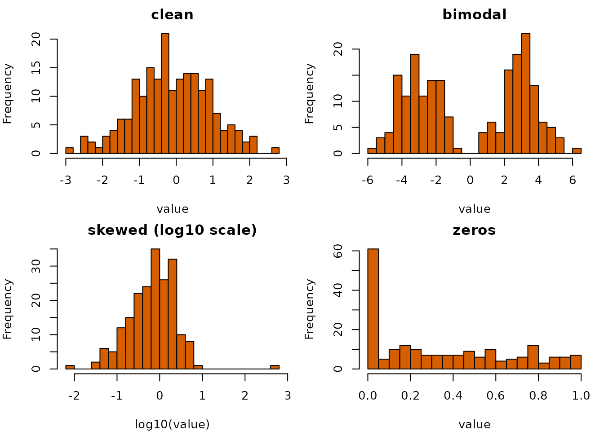
par(op)
plotecdf(c(reference$score, fresh$score),
rep(c("reference", "fresh"), c(nrow(reference), nrow(fresh))),
main = "Fresh scores against the reference")
Missingness, duplicates, outliers and distinct counts
Before a published table is analysed it should be looked at for the four things that most often go wrong in ingestion: missing values with a pattern, duplicated rows, rows that are ordinary on each column but impossible jointly, and identifier columns with fewer distinct values than they should have.
Missingness
df <- data.frame(a = c(1, NA, 3), b = c(NA, NA, 3), c = 1:3)
misssmry(df)
#> n_rows n_cols n_missing pct_missing
#> 3.00000 3.00000 3.00000 33.33333
#> n_complete_rows pct_complete_rows n_cols_any_missing n_cols_all_missing
#> 1.00000 33.33333 2.00000 0.00000
misssmry(data.frame(x = 1:3, y = 4:6))
#> n_rows n_cols n_missing pct_missing
#> 3 2 0 0
#> n_complete_rows pct_complete_rows n_cols_any_missing n_cols_all_missing
#> 3 100 0 0A pattern matters more than a rate: misspat() tabulates
the combinations of missing columns, missruns() finds runs
of consecutive missing rows (a feed that stopped), and
missgrid() draws an inline text map of where the gaps
are.
set.seed(1)
big <- data.frame(id = 1:40, v = stats::rnorm(40), w = stats::rnorm(40))
big$v[c(10:14, 30)] <- NA
big$w[c(10:14)] <- NA
misspat(big)
#> ── Missingness patterns ──────────────────────────────────────────
#> columns, in pattern order: id, v, w
#>
#> pattern n_rows pctrows n_missing columns
#> ... 34 85.0 0
#> .XX 5 12.5 2 v, w
#> .X. 1 2.5 1 v
#> ──────────────────────────────────────────────────────────────────
missruns(big)
#> ── Runs of consecutive missing values ────────────────────────────
#> column start end length
#> v 10 14 5
#> w 10 14 5
#> ──────────────────────────────────────────────────────────────────Five rows missing both v and w in a block
is a different problem from six scattered gaps; the first points at the
source, the second at the records.
Duplicates
d <- data.frame(id = c(1, 2, 2, 3, 3, 3), x = c("a", "b", "b", "c", "c", "d"))
duprows(d)
#> id x dupe_count
#> 1 2 b 2
#> 2 2 b 2
#> 3 3 c 2
#> 4 3 c 2
duprows(d, cols = "id")
#> id x dupe_count
#> 1 2 b 2
#> 2 2 b 2
#> 3 3 c 3
#> 4 3 c 3
#> 5 3 d 3Full-row duplicates are usually an ingestion artefact; duplicates on the key alone are usually a data-model finding (the key is not a key).
Multivariate outliers
A row can be inside every column’s range and still be impossible: short and heavy, young and retired. The Mahalanobis distance measures how far a row is from the centre of the joint distribution in the metric of its covariance. The robust version uses the median and the MAD, so a cluster of bad rows cannot drag the centre toward itself and hide:
set.seed(1)
n <- 200
df <- data.frame(height = stats::rnorm(n, 170, 10))
df$weight <- df$height * 0.5 + stats::rnorm(n, 0, 5)
df[1, ] <- list(height = 155, weight = 100) # ordinary on each, unlikely jointly
out <- mahaoutl(df)
head(out, 3)
#> ── Mahalanobis outliers (robust) ─────────────────────────────────
#> ! 1 of 3 rows beyond alpha = 0.001
#>
#> row distance p_value logpvalue outlier
#> 1 4.30 9.61e-05 -9.249997 TRUE
#> 32 2.90 0.0149 -4.204956 FALSE
#> 14 2.81 0.0194 -3.940191 FALSE
#> ──────────────────────────────────────────────────────────────────
out$row[1] == 1
#> [1] TRUE
range(df$height[-1])
#> [1] 147.8530 194.0162
range(df$weight[-1])
#> [1] 67.07546 101.82631With a cluster of bad rows, the classical distance of a bad row is smaller than the robust one, because the cluster has pulled the classical centre toward itself:
bad <- df
bad[2:21, ] <- list(height = 150, weight = 110)
dclassical <- mahaoutl(bad, robust = FALSE)
drobust <- mahaoutl(bad, robust = TRUE)
dclassical$distance[dclassical$row == 2] < drobust$distance[drobust$row == 2]
#> [1] TRUEThe flag threshold is a chi-square quantile
(alpha = 0.001 by default) with the number of columns as
degrees of freedom. A duplicated column has no distance defined and is
refused.
Distinct counts in fixed memory
How many distinct identifiers does a 200-million-row file have? Holding them all in a set needs memory proportional to the answer. A HyperLogLog sketch answers to within about 1% in a few kilobytes, can be fed block by block, and two sketches of two files merge into one:
set.seed(1)
x <- sample(1:5000, 200000, replace = TRUE)
dstncnt(dstnskch(x))
#> [1] 5039.269
length(unique(x))
#> [1] 5000
s <- dstnskch(x[1:100000])
s <- dstnskch(x[100001:200000], regstr = s)
dstncnt(s)
#> [1] 5039.269
a <- dstnskch(x[1:100000])
b <- dstnskch(x[100001:200000])
dstncnt(skchmrg(a, b))
#> [1] 5039.269Small cardinalities are near-exact through linear counting, and an empty input has no distinct values:
dstncnt(dstnskch(c("a", "b", "c", "a", "b")))
#> [1] 3.000275
dstncnt(dstnskch(character(0)))
#> [1] 0An identifier column whose distinct count is far below its row count
is not an identifier; cpsdrft() uses the same reasoning to
decide which columns to compare as categories.
Does the data look fabricated or truncated?
Benford’s law gives the expected distribution of leading digits for a quantity that spans several orders of magnitude; a strong departure is a reason to ask how the numbers were produced (rounding, capping, invention), never a proof of anything on its own:
set.seed(3)
benfordtst(10^stats::runif(2000, 0, 6))$p_value
#> [1] 0.2599175
benfordtst(as.numeric(paste0(sample(1:9, 2000, TRUE), "000")))$p_value
#> [1] 9.672166e-161Order of operations
-
misssmry()andmisspat(); decide whether gaps are structural. -
duprows()on the full row and on the key. -
mahaoutl()on the numeric columns, robust. -
dstnskch()on identifiers when the table is large. - Then, and only then, the analysis.
Suppression in published tables
In a published table, missing values are usually suppression, and the flag says why. On the bundled infant mortality rates by Indigenous identity:
im <- indiex("infantmort")
misssmry(im)
#> n_rows n_cols n_missing pct_missing
#> 18.00000 7.00000 18.00000 14.28571
#> n_complete_rows pct_complete_rows n_cols_any_missing n_cols_all_missing
#> 12.00000 66.66667 3.00000 0.00000
table(im$period, im$quality)
#>
#> .. E ok
#> 1994/1996 6 0 0
#> 2004/2006 0 3 3
#> 2014/2016 0 4 2The 1994/1996 rates are all ..: not available for that
period, not a gap in the file.
The outliers in a picture
On the clean table mahaoutl() flags one row, drawn
first. The second figure puts the two distances side by side for the
table with twenty planted rows: each point is a row, the planted rows in
the accent colour (all twenty have the same values, so they share one
point). That point sits above the diagonal: the robust centre is not
pulled toward the planted rows, so the robust distance places them
further out.
plot(out)
planted <- dclassical$row %in% 2:21
plot(dclassical$distance, drobust$distance[match(dclassical$row, drobust$row)],
pch = 19, col = ifelse(planted, blpal()[2], blpal()[1]),
xlab = "classical distance", ylab = "robust distance",
main = "Planted rows: classical against robust distance")
abline(0, 1, lty = 2)
legend("topleft", c("planted rows", "other rows"), pch = 19, col = blpal()[c(2, 1)], bty = "n")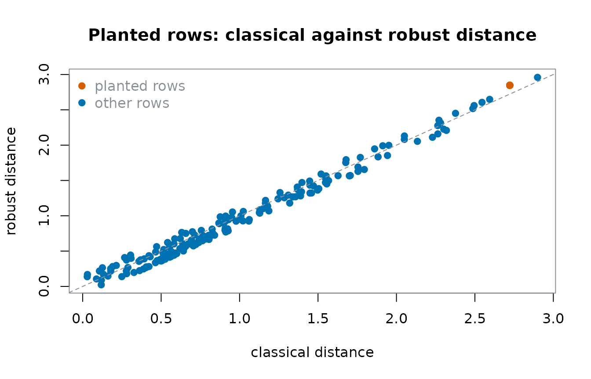
Categorical integrity: labels that cannot be swapped quietly
In August 2020 the Ontario Human Rights Commission published A Disparate Impact, whose multivariate tables said Black civilians in Toronto were 30 to 58 times as likely as White civilians to experience police use of force, and other racialized civilians 5 to 14 times. On 26 January 2023 the Commission published a correction: the figures are 4 to 5 times for Black civilians, and other racialized civilians were about 40% less likely. Between the SPSS file and the R analysis the four race codes had been rotated one place (White read as Black, Black as other racialized, other racialized as unknown, unknown as White), so the largest group was being compared with the smallest. The independent review attributed the rotation to the transfer between the two packages. Nothing in either package rotates labels on its own; what was missing was a step that would have refused the rotation, or named it, on the day. This vignette is that step. Sources: OHRC, Correction to A Disparate Impact (2023-01-26); Jung, M. (2022), Independent Expert Review of Part E of the Use of Force by the Toronto Police Service report, submitted to the OHRC, December 2022.
The report’s numbers against the table’s labels
Start with what a reader can check: a table of counts as labelled (the counts below are illustrative, shaped like the case: a large White group, a Black group with a real disparity, and a very small unknown group), the reference group, and the odds ratios a report states.
tab <- matrix(c(9000, 120, 2000, 220, 1500, 60, 4000, 1), ncol = 2, byrow = TRUE,
dimnames = list(c("White", "Black", "Other", "Unknown"), c("no", "yes")))
tab
#> no yes
#> White 9000 120
#> Black 2000 220
#> Other 1500 60
#> Unknown 4000 1
ref <- 120 / 9000
orchk(tab, "White", c(Black = 220 / 2000 / ref, Other = 60 / 1500 / ref,
Unknown = 1 / 4000 / ref))$verdict
#> [1] "the reported odds ratios follow from the table as labelled"Now rotate the labels one place, as happened in the transfer, and read off the odds ratios a report would print:
rotated <- tab[c("Unknown", "White", "Black", "Other"), ]
rownames(rotated) <- rownames(tab)
rref <- rotated["White", 2] / rotated["White", 1]
reported <- c(Black = rotated["Black", 2] / rotated["Black", 1] / rref,
Other = rotated["Other", 2] / rotated["Other", 1] / rref,
Unknown = rotated["Unknown", 2] / rotated["Unknown", 1] / rref)
round(reported, 1)
#> Black Other Unknown
#> 53.3 440.0 160.0
r <- orchk(tab, "White", reported)
r$consistent
#> [1] FALSE
r$matches
#> relabelling
#> 1 White -> Black, Black -> Other, Other -> Unknown, Unknown -> White
#> outcome_columns_swapped
#> 1 FALSE
r$verdict
#> [1] "the reported odds ratios do NOT follow from the table as labelled; they are reproduced under a relabelling (White -> Black, Black -> Other, Other -> Unknown, Unknown -> White): the groups were mislabelled, not the software"The function tries every relabelling of the rows (and the two outcome columns) and names the one that reproduces the reported figures: here the one-place rotation, with the “White” odds actually those of the tiny unknown group, which is exactly how a real disparity of about 4 becomes a reported one of about 50. Numbers that no relabelling produces are reported as exactly that.
Codes that arrive without their labels
Data exported from SPSS, Stata or SAS often lands as integer codes.
deccodes() needs the code-to-label dictionary written out
and refuses a code it does not know; audcats() flags the
columns that still look like codes.
raw <- data.frame(race = c(1, 2, 2, 3, 1), stringsAsFactors = FALSE)
audcats(data.frame(race = factor(raw$race)))
#> Categorical audit: 1 column(s)
#> race factor 3 level(s), reference ‘1’
#> !! HAZARD: all labels numeric-looking (1,2,3...): likely imported CODES whose value labels were lost; as.numeric() on this column returns level INDICES, not data
race <- deccodes(raw$race, c("1" = "White", "2" = "Black", "3" = "Indigenous"))
race
#> [1] "White" "Black" "Black" "Indigenous" "White"
#> attr(,"recode_audit")
#> attr(,"recode_audit")$mapping
#> 1 2 3
#> "White" "Black" "Indigenous"
#>
#> attr(,"recode_audit")$kept
#> character(0)
#>
#> attr(,"recode_audit")$checksum
#> [1] "be0b0dcd1bb12223f6d28bc031e1accfd45a3f700d18c920b54d7d766905bdd0"A recode you can prove
grdrcd() maps by name only and errors on anything
unmapped; vrfrcd() cross-tabulates before against after and
errors unless each old label went to exactly one new label, the one the
mapping declares; grdlvls() fixes the level order so the
reference group is a decision, not an accident of the alphabet.
x <- c("W", "B", "W", "I", "B")
y <- grdrcd(x, c(W = "White", B = "Black", I = "Indigenous"))
vrfrcd(x, y, c(W = "White", B = "Black", I = "Indigenous"))
grdlvls(y, c("White", "Black", "Indigenous"), ref = "White")
#> [1] White Black White Indigenous Black
#> Levels: White Black IndigenousAnd the swap, caught on the day:
Counts against what was published
If the release states how many rows each label has, the recode must reproduce those counts. When it does not, the function tries every permutation of the labels and says which one would make the counts match: the fingerprint of labels attached to the wrong groups.
vrfmrg(y, c(White = 2, Black = 2, Indigenous = 1))
vrfmrg(y, c(White = 2, Black = 1, Indigenous = 2))
#> Error:
#> ! vrfmrg: recoded counts do not match the published counts. White: observed 2, published 2; Black: observed 2, published 1; Indigenous: observed 1, published 2. The observed counts match the published ones if the labels are permuted (Black -> Indigenous, Indigenous -> Black): the labels are attached to the wrong groups.The record
rcdmnf() writes down the mapping and its digest, the
counts before and after, the checks that passed, and, with a key, a
signature over the record. A later reader verifies the file against the
data.
key <- pqckg(height = 2)
m <- rcdmnf(x, y, c(W = "White", B = "Black", I = "Indigenous"),
pub = c(White = 2, Black = 2, Indigenous = 1),
key = key, ctx = "vignette")
p <- wrrcdmnf(m, tempfile(fileext = ".json"))
vrfrcdmnf(p, x, y)[c("ok", "signature_ok")]
#> $ok
#> [1] TRUE
#>
#> $signature_ok
#> [1] TRUEChange the data or the file afterwards and verification says so, with the reason.
yswapped <- as.character(y)
yswapped[yswapped == "Black"] <- "Indigenous"
vrfrcdmnf(p, x, yswapped)[c("ok", "reasons")]
#> $ok
#> [1] FALSE
#>
#> $reasons
#> [1] "vrfrcd: ‘B’ was mapped to ‘Indigenous’ but the declared mapping says ‘Black’. THIS is how groups get swapped; fix the recode before any model runs."
#> [2] "recoded counts differ from the manifest"Finally, the guard that stops a factor from reaching a numeric
treatment slot, where as.numeric() would hand a model the
level indices instead of the data:
grdbin(c("treated", "control"), "treatment")
#> Error:
#> ! Column ‘treatment’ is categorical (‘treated’, ‘control’...). Refusing to coerce: as.numeric() on a factor returns level INDICES (1, 2, ...), not your data, and a mis-ordered level silently relabels every observation. Encode explicitly first, e.g. grdrcd() + as.integer(x == "treated_label").The transfer that matters: SPSS (or Stata, SAS) to R
The documented failure happened between two programs. The source
stores each category as a code with a value label; the destination
receives the codes, and the labels are re-attached in the analysis. The
only faithful way to re-attach them is by code. Here is what arrives
from a .sav file (haven keeps the labels as an attribute,
label = code), and the two things the source program printed that make
the import checkable: its code book and its frequency table.
arrived <- structure(c(1, 1, 2, 4, 1, 3, 1, 2),
labels = c(White = 1, Black = 2, Other = 3, Unknown = 4))
code_book <- c("1" = "White", "2" = "Black", "3" = "Other", "4" = "Unknown")
spssfre <- c(White = 4, Black = 2, Other = 1, Unknown = 1)
chk <- xfrvrf(arrived, spssfre, codebook = code_book)
chk$ok
#> [1] TRUE
levels(chk$decoded)
#> [1] "White" "Black" "Other" "Unknown"The levels are in code order, not alphabetical order, because the code book says so. Now the idiom that produced the documented rotation: the labels, in the order R sorts them, assigned to the codes by position.
f <- factor(c(1, 2, 3, 4, 1))
levels(f) <- sort(unname(code_book))
data.frame(code = c(1, 2, 3, 4, 1), became = as.character(f))
#> code became
#> 1 1 Black
#> 2 2 Other
#> 3 3 Unknown
#> 4 4 White
#> 5 1 BlackCode 1 (White) became “Black”, 2 (Black) became “Other”, 3 (Other)
became “Unknown”, 4 (Unknown) became “White”: the four-way rotation in
the correction notice, from one line. relbl() refuses that
line:
relbl(factor(c(1, 2, 3, 4, 1)), sort(unname(code_book)))
#> Error:
#> ! relabel: `map` must be NAMED (old label = new label). Assigning labels by POSITION is how four race codes were rotated in a published analysis (OHRC correction, 26 January 2023): the labels were in alphabetical order, the codes were not.
relbl(factor(c(1, 2, 3, 4, 1)), code_book)
#> [1] White Black Other Unknown White
#> attr(,"recode_audit")
#> attr(,"recode_audit")$mapping
#> 1 2 3 4
#> White Black Other Unknown
#>
#> attr(,"recode_audit")$kept
#> character(0)
#>
#> attr(,"recode_audit")$checksum
#> [1] 3d394c3d6f779a313f8fbeecaf5bc4f104738096c07f03c48ab68d5eb52e8de4
#>
#> Levels: White Black Other UnknownAnd xfrvrf() refuses the result if it somehow got past
that, because the frequency table no longer matches by label:
xfrvrf(as.character(f), c(White = 2, Black = 1, Other = 1, Unknown = 1))
#> Error:
#> ! vrfmrg: recoded counts do not match the published counts. White: observed 1, published 2; Black: observed 2, published 1; Other: observed 1, published 1; Unknown: observed 1, published 1. The observed counts match the published ones if the labels are permuted (White -> Black, Black -> White): the labels are attached to the wrong groups.Exonerating the software, or not
When a permutation is blamed on the transfer, the question to ask is
which deterministic step, applied to the code book, yields exactly the
permutation observed. rlblfrns() tries the known ones.
observed <- c(White = "Black", Black = "Other", Other = "Unknown", Unknown = "White")
rlblfrns(code_book, observed)
#> Mechanism(s) reproducing the observed permutation:
#> * labels sorted alphabetically, assigned by code position
#> White -> Black, Black -> Other, Other -> Unknown, Unknown -> White
#> * labels sorted case-insensitively, assigned by code position
#> White -> Black, Black -> Other, Other -> Unknown, Unknown -> White
#> * rotation by 1 position(s)
#> White -> Black, Black -> Other, Other -> Unknown, Unknown -> White
#>
#> The observed permutation is reproduced EXACTLY by: labels sorted alphabetically, assigned by code position; labels sorted case-insensitively, assigned by code position; rotation by 1 position(s). No import routine (haven, foreign, pandas, pyreadstat) reorders value labels; each carries them keyed by code. A transfer fault does not select the sort order of the labels. The step that did this was a positional relabel in the analysis, and it is reproducible from the code book alone.No import routine in R or Python (haven, foreign, pandas, pyreadstat) sorts value labels onto codes; each keeps them keyed by code. A permutation that coincides with the alphabetical order of the labels was made by a positional relabel in the analysis, and anyone with the code book can reproduce it. A permutation that no mechanism reproduces points at a merge, a manual edit, or the file, and the function says so instead of guessing.
The rotation in a picture
Each bar is the odds of the outcome in a group relative to White, on a log scale. The light bars use the correct labels; the dark bars use the labels rotated one place, which is what the published ratios match. A rotation of four codes is enough to turn ratios near 1 into ratios in the hundreds.
odds_vs_white <- function(t) (t[, "yes"] / t[, "no"]) / (t["White", "yes"] / t["White", "no"])
r <- rbind(correct = odds_vs_white(tab), rotated = odds_vs_white(rotated))[, -1]
barplot(r, beside = TRUE, log = "y", col = blpal()[c(2, 1)], ylab = "odds ratio vs White (log scale)",
legend.text = c("correct labels", "labels rotated one place"),
args.legend = list(x = "topleft", bty = "n"), main = "Same counts, rotated labels")
#> Warning in yinch(0.1): y log scale: yinch() is nonsense
abline(h = 1, lty = 2)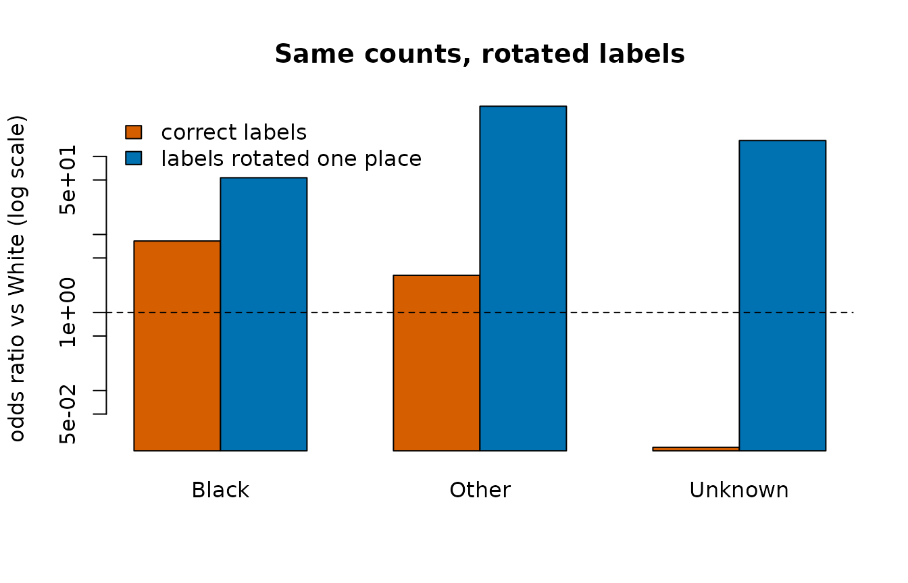
Statistics for a published administrative table
An open-data extract from a criminal-justice system has a particular shape: a handful of fiscal years, counts rather than measurements, categories reported as bands rather than values, and a region code with no geometry attached. The general-purpose toolkits assume none of that. This vignette covers the functions that do.
The running example is the shape Ontario’s inmate datasets have – one row per placement, keyed on the fiscal year’s end year, with banded counts and a region.
A Statistics Canada table, as published
A Statistics Canada full-table download puts each estimate, its
confidence limits (or its coefficient of variation), and a quality flag
on separate rows. sctidy() reads the flags and never keeps
a suppressed value. scests() puts each estimate beside its
limits, whatever form the limits take. Here, a table with three measures
per cell, and limits that name their measure only in part:
pyll <- data.frame(GEO = rep(c("Inuit Nunangat", "Rest of Canada"), each = 5),
Characteristics = rep(c("Number of potential years of life lost",
"Crude rate of potential years of life lost",
"Age-standardized rate of potential years of life lost",
"Low 95% confidence interval, potential years of life lost",
"High 95% confidence interval, potential years of life lost"), 2),
VALUE = c(5000, 900, 1100, 1000, 1200, 7000, 800, 950, 870, 1030), STATUS = "")
scests(pyll)[, c("GEO", "measure", "estimate", "lower", "upper")]
#> GEO measure estimate
#> 1 Inuit Nunangat Number of potential years of life lost 5000
#> 2 Inuit Nunangat Crude rate of potential years of life lost 900
#> 3 Inuit Nunangat Age-standardized rate of potential years of life lost 1100
#> 4 Rest of Canada Number of potential years of life lost 7000
#> 5 Rest of Canada Crude rate of potential years of life lost 800
#> 6 Rest of Canada Age-standardized rate of potential years of life lost 950
#> lower upper
#> 1 NA NA
#> 2 NA NA
#> 3 1000 1200
#> 4 NA NA
#> 5 NA NA
#> 6 870 1030The limits belong to the age-standardised rate: they are the only pair that contains its estimate in every cell. (The values are made up; the layout is that of table 13-10-0402.)
Bands
Published categories are intervals. Anything computed from them rests on an assumption about where inside each band the mass sits, and on a second assumption about where the open top band ends.
bands <- prsbands(c("1", "2 to 5", "6 to 10", "Greater than 10"))
bands
#> label lower upper openlo openup
#> 1 1 1 1 FALSE FALSE
#> 2 2 to 5 2 5 FALSE FALSE
#> 3 6 to 10 6 10 FALSE FALSE
#> 4 Greater than 10 11 NA FALSE TRUENote what the bounds say. "Greater than 10" starts at
11, because the quantity is a count of placements;
"10 or more" would start at 10. One whole placement
separates the two readings, and only the label says which was meant.
The representative value needs a rule, and the open band needs a cap:
bandvals(bands)
#> label lower upper openlo openup value assumed
#> 1 1 1 1 FALSE FALSE 1.0 FALSE
#> 2 2 to 5 2 5 FALSE FALSE 3.5 FALSE
#> 3 6 to 10 6 10 FALSE FALSE 8.0 FALSE
#> 4 Greater than 10 11 NA FALSE TRUE 16.5 TRUEThe last row is marked assumed, because a band with no
upper bound has no midpoint. Everything downstream inherits that
assumption, so measure how much it matters:
counts <- c(1200, 430, 110, 38)
bandsens(bands, counts)
#> ── Sensitivity to the open top band's assumed cap ────────────────
#> cap value
#> 11.55000 0.4254708
#> 15.09841 0.4346095
#> 19.73696 0.4461100
#> 25.80058 0.4604302
#> 33.72707 0.4780278
#> 44.08875 0.4993060
#> 57.63375 0.5245371
#> 75.34008 0.5537719
#> 98.48616 0.5867522
#> 128.74322 0.6228545
#> 168.29590 0.6610951
#> 220.00000 0.7002144
#>
#> span over the caps tried: 0.2747 (53.7% of the typical value)
#> The statistic moves by more than a tenth of itself across the
#> caps tried, so it is a property of the assumption as much as
#> of the data. Report the range, not a single figure.
#> ──────────────────────────────────────────────────────────────────Read the span, not the middle row. A statistic that moves by more than a tenth of itself across plausible caps is a property of the assumption as much as of the data, and the honest report is the range.
Concentration
The recurring question is whether a few individuals account for most of the total.
placements <- expbands(bands, counts, openupcap = 25)
ginicoef(placements)
#> [1] 0.4585838
topshr(placements, c(0.01, 0.05, 0.1))
#> fraction units share
#> 1 0.01 18 0.07589599
#> 2 0.05 89 0.25579761
#> 3 0.10 178 0.39095807Gini has a ceiling that depends on the number of units: for
n units the maximum is 1 - 1/n, not 1. A Gini
of 0.9 means something different across ten units than across ten
thousand.
c(ten = 1 - 1 / 10, thousand = 1 - 1 / 1000)
#> ten thousand
#> 0.900 0.999If the tail looks heavy, fit it rather than asserting it – and read the goodness-of-fit distance before the exponent:
fit <- hilltlidx(placements, xmin = 1)
c(alpha = round(fit$alpha, 2), ks = round(fit$ks, 3),
reliable = fit$reliable)
#> alpha ks reliable
#> 2.100 0.044 1.000A large ks means the tail is not a power law, whatever
alpha came out as. The estimator maximises the exact
discrete likelihood: the closed-form continuity correction usually
quoted is an asymptotic approximation in the threshold, and at a
threshold of one – where counts start – it is badly biased.
Trend across a handful of years
Five annual points support a rank test and a resistant slope. They do not support a model with an autocorrelation structure.
y <- c(402, 377, 190, 268, 331)
tt <- trndtst(y)
c(tau = tt$tau, p = round(tt$p_value, 4), slope = tt$slope)
#> tau p slope
#> -0.4000 0.4833 -21.3750
tt$method
#> [1] "Mann-Kendall, exact over all 120 orderings"The p-value is exact, by enumerating all 120 orderings. For counts, the trend is better expressed as a multiplicative change per year:
ct <- cnttrnd(y)
c(rateratio = round(ct$rateratio, 3),
lower = round(ct$lower, 3), upper = round(ct$upper, 3),
dispersion = round(ct$dispersion, 2))
#> rateratio lower upper dispersion
#> 0.923 0.696 1.223 24.390The dispersion is reported because a Poisson interval assumes it is one. Above 1.5 the interval is widened to the quasi-Poisson one rather than being left too narrow.
Did it change when the policy changed?
sc <- stepchg(c(100, 104, 98, 60, 63, 58), x = 2018:2023)
c(after = sc$breakafter, before = sc$before, aftermean = sc$after,
p = round(sc$p_value, 4))
#> after before aftermean p
#> 2020.00000 100.66667 60.33333 0.10000The p-value comes from the permutation distribution of the maximum over splits, not from the best split’s own test. That distinction is the difference between a change-point test and a way of finding a break in noise. It also has a consequence worth stating plainly: six points cannot produce a p-value below about 0.1, however clean the step, because only 72 of the 720 orderings separate three low values from three high ones.
Points, and the regions that contain them
Before a regional count means anything, something has to have decided which region each facility is in. That decision is a region map: built once, from coordinates and a boundary file, and then read by everything downstream.
Which is exactly why recomputing the downstream tables cannot check it. An error in the region map reproduces perfectly in every table built on it, because those tables are where it is read. The region map has to be checked on its own terms.
cw <- data.frame(
facility = c("North Jail", "South Jail", "Hill Jail", "Lake Jail"),
region = c("3557", "3520", "3553", "3520"),
stringsAsFactors = FALSE
)
pop <- data.frame(
region = c("3557", "3520", "3553", "3552", "3519"),
population = c(114094, 3025647, 171568, 22746, 1173334),
stringsAsFactors = FALSE
)rgnmapintg() finds the failures that a comparison
against published output cannot, because they would be present on both
sides of it: a facility assigned two regions, a facility assigned none,
a region code that belongs to a different province.
rgnmapintg(cw, "facility", "region", regs = pop$region)
#> check observed expected pass
#> 1 units assigned more than one region 0 0 TRUE
#> 2 units assigned no region 0 0 TRUE
#> 3 region codes not in the reference geography 0 0 TRUEEvery check is written so that zero is the passing value, which is what makes the frame safe to record directly into a manifest.
bad <- cw
bad$region[3] <- "2406" # a code from another province
rgnmapintg(bad, "facility", "region", regs = pop$region)
#> check observed expected pass
#> 1 units assigned more than one region 0 0 TRUE
#> 2 units assigned no region 0 0 TRUE
#> 3 region codes not in the reference geography 1 0 FALSERecomputing is not the same as checking
rgnmapcmp() matches a recomputed region map against the
published one and compares them cell by cell. Numeric columns go through
all.equal(), so a coordinate that survived a round trip
through text is not reported as a change.
recomputed <- cw
recomputed$region[2] <- "3519"
rgnmapcmp(cw, recomputed, "facility")
#> column cells mismatched first
#> 1 rows 4 0
#> 2 region 4 1 South Jail: published 3520, recomputed 3519That is worth having, and it is worth being clear about what it establishes: the recomputation reproduced the published assignment. Run the same method against the same boundary file and a definitional error reproduces perfectly too. Both sides move together.
A second route can disagree
The check that can catch an error in the original method is one that does not use that method. Derive the region a different way – from a place name, a postal geography, an administrative lookup – and compare.
A name-based route is the usual second route, and it has understood weaknesses. Names collide. In Ontario, census division 3552 is named “Sudbury” and is a thinly populated district; census division 3553 is named “Greater Sudbury” and is the city inside it. A facility in the city has a postal address in Sudbury, and a name route sends it to the district.
route <- c("North Jail" = "3557", "South Jail" = "3520",
"Hill Jail" = "3552", "Lake Jail" = "3520")
rgnmapalt(cw, "facility", "region", route,
known = "Hill Jail")
#> unit primary second known
#> 1 Hill Jail 3553 3552 TRUEThe known-bad case is listed by NAME rather than allowed for by
widening a tolerance, and the distinction matters. A tolerance of “one
disagreement is acceptable” would swallow a second, different
disagreement silently. Naming it means sum(!x$known) stays
the number that must be zero.
route["South Jail"] <- "3599" # an assignment nobody documented
d <- rgnmapalt(cw, "facility", "region", route,
known = "Hill Jail")
d
#> unit primary second known
#> 1 South Jail 3520 3599 FALSE
#> 2 Hill Jail 3553 3552 TRUE
sum(!d$known)
#> [1] 1Facilities the route does not cover are skipped rather than counted as disagreements, so a partial second route is still usable. Record how many it covered: a route that quietly stops matching anything leaves the disagreement check passing over an empty set.
length(route)
#> [1] 4rgnmappts() does the geometric recompute, projecting the
points onto the boundary file’s own coordinate system rather than the
reverse, since reprojecting polygons moves their edges. It needs
sf and a boundary file and returns NULL
without either, so a verification script records the check as
unavailable instead of failing over an optional dependency. It also
returns nreg rather than silently resolving it: any value
but 1 means the point fell outside the geography, or the boundaries
overlap.
The coverage share is not a denominator
With the region map checked, the obvious next step is a rate per
region. rgncov() reports the ingredients and, every time it
prints, declines to supply that rate.
units <- vapply(pop$region, function(r) sum(cw$region == r), numeric(1))
cov <- rgncov(pop$region, pop$population, units)
cov
#> ── 4 units in 3 of 5 regions ─────────────────────────────────────
#> those regions hold 3,311,309 of 4,507,389 residents (73.5%)
#> 2 regions hold none; 1,196,080 residents (26.5%) live there
#>
#> region population units hasunit popshr
#> 3520 3025647 2 TRUE 67.1263785
#> 3553 171568 1 TRUE 3.8063722
#> 3557 114094 1 TRUE 2.5312659
#> 3519 1173334 0 FALSE 26.0313454
#> 3552 22746 0 FALSE 0.5046381
#>
#> The covered share is context, not a denominator: units serve
#> catchments, so a rate over these regions alone would take its
#> numerator from the whole territory and is inflated.
#> ──────────────────────────────────────────────────────────────────Two of the five regions hold no facility at all. It is tempting to read their population as uncovered, and to build a regional rate on the population of the regions that do hold one. Both readings are wrong, for the same reason.
A facility serves a catchment: an administrative fact about where people are sent from, which a coordinate does not state and cannot imply. Some geographies were never meant to have one facility each. So summing the populations of facility-holding regions gives a denominator covering part of the territory while the numerator counts people drawn from all of it. Every rate built that way is inflated, and inflated unevenly – a dense region holding one facility and a sparse region holding seven distort it in opposite directions.
a <- attr(cov, "coverage")
c(covered = a$covpop, uncovered = a$uncpop,
share = round(a$covshr, 1))
#> covered uncovered share
#> 3311309.0 1196080.0 73.5Where the numerator and the denominator have to cover the same people, the defensible figure is the whole-territory one. That is the next section.
Regions
A region code is an areal unit, not a coordinate. Three things go wrong with a table of regional counts: the regions hold different numbers of people, they hold different kinds of people, and a small region’s rate is mostly noise.
d <- expand.grid(
region = c("Central", "Eastern", "Northern", "Toronto", "Western"),
age = c("18 to 24", "25 to 49", "50+"),
stringsAsFactors = FALSE
)
d$pop <- rep(c(4000, 3000, 800, 5000, 2500), 3) *
rep(c(0.3, 0.55, 0.15), each = 5)
set.seed(13)
rate <- c(Central = 0.006, Eastern = 0.011, Northern = 0.010,
Toronto = 0.016, Western = 0.012)
d$n <- rpois(nrow(d), lambda = d$pop * rate[d$region])Indirect standardisation handles the second problem: the expected count is what each region would have under the overall rate in every age band, given its own age composition.
e <- expcnts(d$n, d$pop, d$region, strata = d$age)
e
#> area observed population expected
#> 1 Central 17 4000 48.366013
#> 2 Eastern 36 3000 36.274510
#> 3 Northern 9 800 9.673203
#> 4 Toronto 86 5000 60.457516
#> 5 Western 37 2500 30.228758The expected counts total the observed ones. That identity is what makes them a standardisation rather than a prediction.
The ratio, with an exact interval – the counts here are small, and a normal approximation on a count of six is a decoration rather than an interval:
stdinc(e$observed, e$expected, e$area)
#> area observed expected sir lower upper excess deficit
#> 1 Central 17 48.366013 0.3514865 0.2047538 0.5627639 FALSE TRUE
#> 2 Eastern 36 36.274510 0.9924324 0.6950875 1.3739448 FALSE FALSE
#> 3 Northern 9 9.673203 0.9304054 0.4254406 1.7661993 FALSE FALSE
#> 4 Toronto 86 60.457516 1.4224865 1.1378056 1.7567592 TRUE FALSE
#> 5 Western 37 30.228758 1.2240000 0.8618090 1.6871228 FALSE FALSE
#> significant
#> 1 TRUE
#> 2 FALSE
#> 3 FALSE
#> 4 TRUE
#> 5 FALSEAnd the third problem. A league table of rates ranks the small regions to both ends by construction, so borrow strength across regions:
ebrates(e$observed, e$expected, e$area)
#> area observed expected sir eb shrinkage nu alpha
#> 1 Central 17 48.366013 0.3514865 0.4301763 0.12133873 6.679104 6.679104
#> 2 Eastern 36 36.274510 0.9924324 0.9936092 0.15549575 6.679104 6.679104
#> 3 Northern 9 9.673203 0.9304054 0.9588313 0.40845028 6.679104 6.679104
#> 4 Toronto 86 60.457516 1.4224865 1.3804553 0.09948526 6.679104 6.679104
#> 5 Western 37 30.228758 1.2240000 1.1834634 0.18096698 6.679104 6.679104shrinkage is how far each estimate was pulled toward the
overall rate. It is governed by the expected count, which is to say by
how much information the region carries – not by how extreme its ratio
was.
The funnel plot shows the reader the same thing directly: what range a region’s ratio could take, given its size, if it were no different from anywhere else.
fnllim(c(5, 20, 50, 200))
#> expected level lower upper
#> 1 5 0.950 0.200 2.000
#> 2 20 0.950 0.600 1.450
#> 3 50 0.950 0.740 1.280
#> 4 200 0.950 0.865 1.140
#> 5 5 0.998 0.000 2.600
#> 6 20 0.998 0.400 1.750
#> 7 50 0.998 0.600 1.460
#> 8 200 0.998 0.790 1.225Autocorrelation, if you have a neighbour list
nb <- list(c(2L, 4L), c(1L, 3L), c(2L, 5L), c(1L, 5L), c(3L, 4L))
set.seed(1)
mi <- morani(e$observed / e$expected, nb, nperm = 999L)
c(I = round(mi$I, 3), expectation = round(mi$expectation, 3),
p = mi$p_value)
#> I expectation p
#> -0.292 -0.250 0.842The neighbour list has to be supplied. An extract keyed on a region
ships no geometry, and a guessed adjacency would make the answer a
property of the guess. Note too that the null expectation is
-1/(n - 1), not zero: with five regions, a small negative
I is what independence looks like.
-1 / (5 - 1)
#> [1] -0.25Indigenous examples
Statistics Canada tables on Indigenous health come in several
layouts; scests() reads them all into estimate, lower and
upper. The bundled excerpts are already in that form, and
stdprev() and indgap() take them directly; see
vignette("applied-analyses"). A trend across the three life
expectancy periods:
le <- indiex("lifeexp")
inuit <- le[le$group == "Inuit", ]
inuit[, c("period", "estimate", "lower", "upper")]
#> period estimate lower upper
#> 2 2006/2011 71.83 70.44 73.23
#> 9 2011/2016 74.18 72.17 76.19
#> 16 2016/2021 71.91 70.80 73.03
trndtst(inuit$estimate, x = 1:3)$p_value
#> [1] 1Three periods cannot show a trend: the exact Mann-Kendall p-value is 1.
Banded tables and concentration: from ‘6 to 10’ to a Gini
Published frequency tables band their values: “1”, “2 to 5”, “6 to 10”, “Greater than 10”. To compute anything about the underlying distribution, the bands have to be parsed, given representative values, and expanded into per-unit values, and the result has to be checked against the one assumption that cannot be verified: what the open top band contains.
Parsing band labels
prsbands(c("1", "2 to 5", "6 to 10", "Greater than 10"))
#> label lower upper openlo openup
#> 1 1 1 1 FALSE FALSE
#> 2 2 to 5 2 5 FALSE FALSE
#> 3 6 to 10 6 10 FALSE FALSE
#> 4 Greater than 10 11 NA FALSE TRUE
prsbands(c("18 to 24", "25 to 49", "50+"))
#> label lower upper openlo openup
#> 1 18 to 24 18 24 FALSE FALSE
#> 2 25 to 49 25 49 FALSE FALSE
#> 3 50+ 50 NA FALSE TRUEAn unrecognised label is reported as unparsed, never guessed at:
Representative values
Each band needs one value to stand for its members: the midpoint by default, or the lower or upper edge, or the geometric mean for skewed quantities. The open top band has no upper edge, so a cap or a factor on its lower edge is supplied explicitly:
b <- prsbands(c("1", "2 to 5", "6 to 10", "Greater than 10"))
bandvals(b, rule = "midpoint", openupcap = 20)
#> label lower upper openlo openup value assumed
#> 1 1 1 1 FALSE FALSE 1.0 FALSE
#> 2 2 to 5 2 5 FALSE FALSE 3.5 FALSE
#> 3 6 to 10 6 10 FALSE FALSE 8.0 FALSE
#> 4 Greater than 10 11 NA FALSE TRUE 15.5 TRUE
bandvals(b, rule = "geometric", openupcap = 20)
#> label lower upper openlo openup value assumed
#> 1 1 1 1 FALSE FALSE 1.000000 FALSE
#> 2 2 to 5 2 5 FALSE FALSE 3.162278 FALSE
#> 3 6 to 10 6 10 FALSE FALSE 7.745967 FALSE
#> 4 Greater than 10 11 NA FALSE TRUE 14.832397 TRUEExpanding to per-unit values
With counts per band, expbands() returns one value per
unit, ready for any statistic:
Concentration
The Gini coefficient measures how unequally a total
is spread across units: 0 when every unit holds the same, approaching 1
when one unit holds everything. topshr() reports what the
most frequent few account for, and lorenzc() gives the
curve behind the Gini.
ginicoef(rep(1, 10)) # no concentration
#> [1] 0
ginicoef(c(rep(0, 9), 1)) # one unit holds everything
#> [1] 0.9
1 - 1 / 10 # the maximum for ten units
#> [1] 0.9
placements <- c(rep(1, 1200), rep(3, 430), rep(8, 110), rep(20, 38))
ginicoef(placements)
#> [1] 0.461225
topshr(placements, c(0.01, 0.05, 0.1))
#> fraction units share
#> 1 0.01 18 0.08716707
#> 2 0.05 89 0.28280872
#> 3 0.10 178 0.41888620
head(lorenzc(placements))
#> population value
#> 1 0.0000000000 0.0000000000
#> 2 0.0005624297 0.0002421308
#> 3 0.0011248594 0.0004842615
#> 4 0.0016872891 0.0007263923
#> 5 0.0022497188 0.0009685230
#> 6 0.0028121485 0.0012106538Here the top 1% of people account for a disproportionate share of placements: the substantive finding a banded table hides.
The assumption you cannot check: sensitivity to the open band
Everything above depends on what the “Greater than 10” band is taken
to contain. If the statistic barely moves as that assumption varies, it
has been measured; if it swings, it has not, and the honest report says
so. bandsens() recomputes a statistic over a range of
caps:
counts <- c(1200, 430, 110, 38)
bandsens(b, counts)
#> ── Sensitivity to the open top band's assumed cap ────────────────
#> cap value
#> 11.55000 0.4254708
#> 15.09841 0.4346095
#> 19.73696 0.4461100
#> 25.80058 0.4604302
#> 33.72707 0.4780278
#> 44.08875 0.4993060
#> 57.63375 0.5245371
#> 75.34008 0.5537719
#> 98.48616 0.5867522
#> 128.74322 0.6228545
#> 168.29590 0.6610951
#> 220.00000 0.7002144
#>
#> span over the caps tried: 0.2747 (53.7% of the typical value)
#> The statistic moves by more than a tenth of itself across the
#> caps tried, so it is a property of the assumption as much as
#> of the data. Report the range, not a single figure.
#> ──────────────────────────────────────────────────────────────────
bandsens(b, counts, stat = mean)
#> ── Sensitivity to the open top band's assumed cap ────────────────
#> cap value
#> 11.55000 2.257283
#> 15.09841 2.295202
#> 19.73696 2.344771
#> 25.80058 2.409567
#> 33.72707 2.494271
#> 44.08875 2.604998
#> 57.63375 2.749742
#> 75.34008 2.938955
#> 98.48616 3.186298
#> 128.74322 3.509629
#> 168.29590 3.932296
#> 220.00000 4.484814
#>
#> span over the caps tried: 2.228 (83.2% of the typical value)
#> The statistic moves by more than a tenth of itself across the
#> caps tried, so it is a property of the assumption as much as
#> of the data. Report the range, not a single figure.
#> ──────────────────────────────────────────────────────────────────Heavy tails
When the open band holds a long tail, the question is how heavy. The Hill estimator gives the tail index of a power law; for counts, the exact discrete likelihood matters, because the continuous closed form is badly biased at a threshold of one:
k <- 1:10000
p <- k^(-2.5) / sum(k^(-2.5))
set.seed(2)
z <- sample(k, 5000, replace = TRUE, prob = p)
c(exact = round(hilltlidx(z, xmin = 1)$alpha, 2),
approx = round(hilltlidx(z, xmin = 1, approx = TRUE)$alpha, 2))
#> exact approx
#> 2.46 2.00A short tail still returns an estimate, marked as not to be leaned on:
Workflow
-
prsbands(); stop if anything is unparsed. -
bandvals()orexpbands()with an explicit cap for the open band. - The statistic:
ginicoef(),topshr(),lorenzc(),hilltlidx(). -
bandsens()over the cap, and report the range, not the point.
How unevenly a population is spread
Concentration measures apply to any non-negative counts. With the 2021 Census counts of First Nations people by province and territory (bundled with the package), the Gini coefficient and top shares say how concentrated the population is in a few jurisdictions:
cp <- indiex("censuspop")
tot <- cp[cp$GEO_LEVEL != "Country" & cp$AGE_GROUP == "Total - Age groups" &
cp$RESIDENCE == "Total - Residence on or off reserve" &
grepl("^Total - Average age", cp$CHARACTERISTIC_NAME), ]
ginicoef(tot$FIRST_NATIONS)
#> [1] 0.5291808
topshr(tot$FIRST_NATIONS, fracs = c(0.25, 0.5))
#> fraction units share
#> 1 0.25 4 0.6787850
#> 2 0.50 7 0.9326599The bands and the curve in a picture
The left panel shows the banded counts as published. The right panel
draws the Lorenz curve of the placements with plotlrnz():
the further it bows below the diagonal, the more unevenly the population
is spread.
op <- par(mfrow = c(1, 2))
barplot(counts, names.arg = b$label, col = blpal()[2], main = "Counts by band", ylab = "count")
plotlrnz(placements, main = "Concentration of placements")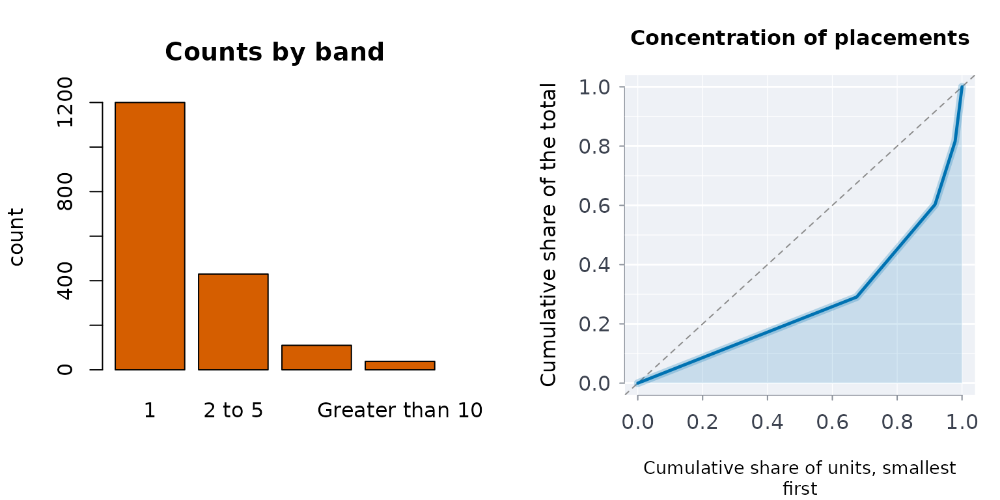
par(op)Year-over-year change, and the three ways it goes wrong
A year-over-year percent change is the most-quoted number in
open-data reporting and the least qualified. yoy() computes
it, and refuses to compute it in the three cases where the figure would
describe something other than the data.
The data
Ontario’s inmate data is published one row per placement, by fiscal year and by group. A realistic shape:
seg <- data.frame(
EndFiscalYear = rep(2019:2023, each = 2),
Gender = rep(c("Female", "Male"), 5),
NumberOfPlacements = c(31, 402, 28, 377, 12, 190, 19, 268, 24, 331)
)Segregation placements rising is bad news, so the direction is declared. That affects colour and the verdict column, never the arithmetic.
y <- yoy(seg,
value = NumberOfPlacements,
prd = EndFiscalYear,
by = "Gender",
dir = "lower"
)
y
#> Gender EndFiscalYear NumberOfPlacements previous change change % interval
#> ────── ───────────── ────────────────── ──────── ────── ──────── ─────────────
#> Female 2019 31 — — — —
#> ↳ note: no comparison period
#> Female 2020 28 31 -3 ▼ -9.7% [-48%, +56%]
#> Female 2021 12 28 -16 ▼ -57.1% [-80%, -13%]
#> Female 2022 19 12 7 ▲ +58.3% [-27%, +258%]
#> Female 2023 24 19 5 ▲ +26.3% [-34%, +144%]
#> Male 2019 402 — — — —
#> ↳ note: no comparison period
#> Male 2020 377 402 -25 ▼ -6.2% [-19%, +8%]
#> Male 2021 190 377 -187 ▼ -49.6% [-58%, -40%]
#> Male 2022 268 190 78 ▲ +41.1% [+17%, +71%]
#> Male 2023 331 268 63 ▲ +23.5% [+5%, +46%]
#>
#> lag 1 period · units: count · 95% exact rate-ratio interval · lower is betterThe interval is exact. Conditional on the two periods’ total, the
current count is binomial, so the ratio of the two has a Clopper-Pearson
interval, which is the same construction
stats::poisson.test() uses:
stats::poisson.test(c(331, 268), c(1, 1))$conf.int
#> [1] 1.048162 1.456380
#> attr(,"conf.level")
#> [1] 0.95The first failure: matching on row order
With a year missing, comparing row i with row i - 1 compares 2023 with 2021 and labels it a one-year change. Matching on the period’s own value cannot do that:
gap <- data.frame(year = c(2019, 2020, 2022, 2023), n = c(100, 120, 140, 150))
yoy(gap, value = n, prd = year)
#> year n previous change change % interval
#> ──── ─── ──────── ────── ──────── ────────────
#> 2019 100 — — — —
#> ↳ note: no comparison period
#> 2020 120 100 20 ▲ +20.0% [-9%, +58%]
#> 2021 — 120 — — —
#> ↳ note: no data
#> 2022 140 — — — —
#> ↳ note: no comparison period
#> 2023 150 140 10 ▲ +7.1% [-15%, +36%]
#>
#> lag 1 period · units: count · 95% exact rate-ratio interval2021 appears as a row with no value, and 2022 has no comparison period rather than a quietly three-year one.
The second failure: a percent off a small base
Two placements becoming twenty is a 900% rise, and the same rise off a base of two is far less certain than off a base of two hundred. The percent is still the right number; what changes is its interval:
tiny <- data.frame(year = 2019:2021, n = c(2, 20, 25))
as.data.frame(yoy(tiny, value = n, prd = year))[, c("year", "pctchg",
"pctlo", "pctup")]
#> year pctchg pctlo pctup
#> 1 2019 NA NA NA
#> 2 2020 900 142.9205 8724.1205
#> 3 2021 25 -33.3407 137.3319Every non-zero base gets its percent and exact interval, however
small the base or the change. Set minbase to add a note to
small-base rows; nothing is withheld either way:
as.data.frame(yoy(tiny, value = n, prd = year, minbase = 20))$flag
#> [1] "no comparison period" "small base (below 20)" NAThe third failure: a percent of a percent
If a rate moves from 4% to 5% that is one percentage point. Calling it 25% answers a different question:
rate <- data.frame(year = 2019:2023, share = c(4.1, 4.6, 5.2, 5.0, 5.4))
yoy(rate, value = share, prd = year, units = "percent")
#> year share previous change points
#> ──── ───── ──────── ────── ────────
#> 2019 4.1 — — —
#> ↳ note: no comparison period
#> 2020 4.6 4.1 0.5 ▲ +0.5pp
#> 2021 5.2 4.6 0.6 ▲ +0.6pp
#> 2022 5.0 5.2 -0.2 ▼ -0.2pp
#> 2023 5.4 5.0 0.4 ▲ +0.4pp
#>
#> lag 1 period · units: percent · percentage-point change, not percent of a percentThe column is named points, and no count interval is
offered, because these are not counts.
Seasonal series
A monthly series compares with the same month a year earlier. The lag follows the series’ own frequency, so January is never put against December:
Across the span
yoysmry(y)
#> Gender from to first last totalpct cagrpct periods up down flat
#> 1 Female 2019 2023 31 24 -22.58065 -6.197938 5 2 2 0
#> 2 Male 2019 2023 402 331 -17.66169 -4.742214 5 2 2 0cagrpct is the compound rate per period: applying it
across the span returns totalpct exactly.
Rates, when the denominator moves too
yoy() compares counts. A count is not comparable across
places of different size, or across years whose populations differ, and
the fix is a rate – but a rate is not made trustworthy by being a
rate.
stops <- data.frame(
division = c("North", "South", "East"),
stops = c(412, 77, 3),
residents = c(120000, 41000, 9500))
rtcalc(stops, stops, residents, by = "division", per = "100k")
#> ── Rate per 100,000, 95% exact Poisson interval ──────────────────
#> division count population rate lower upper flag
#> East 3 9500 31.57895 6.512338 92.28708 <NA>
#> North 412 120000 343.33333 310.977110 378.14142 <NA>
#> South 77 41000 187.80488 148.212673 234.72387 <NA>
#> ──────────────────────────────────────────────────────────────────East’s interval is wider than its own estimate. That is the honest reading of three events, and it is the reason the interval is printed beside the rate rather than left to the reader to imagine. The interval is the exact Poisson one, so a count of zero has a lower limit of exactly zero instead of a negative rate.
A share is a different quantity. Its denominator is the total of the same events, not a population, so shares over a complete grouping sum to 100:
shrs(stops, stops, by = "division")
#> ── Share of 492, 95% Wilson interval ─────────────────────────────
#> division count total share lower upper
#> East 3 492 0.6097561 0.2075843 1.777215
#> North 412 492 83.7398374 80.2200225 86.736863
#> South 77 492 15.6504065 12.7074531 19.125597
#> ──────────────────────────────────────────────────────────────────“40% of stops” and “40 stops per 1,000 residents” are different claims, and a table that labels one as the other is wrong however carefully the arithmetic was done. That is why these are separate functions.
For the change in a rate, both the counts and the denominators move:
d <- data.frame(
year = rep(2021:2023, each = 2),
division = rep(c("North", "South"), 3),
stops = c(400, 70, 430, 66, 455, 61),
residents = c(120000, 41000, 122000, 41500, 125000, 42000))
ratechg(d, stops, residents, year, by = "division", per = "100k")
#> ── Change in rate per 100,000, lag 1, 95% exact conditional interval
#> division year count population rate prerate precnt prepop rateratio
#> North 2021 400 120000 333.3333 NA NA NA NA
#> North 2022 430 122000 352.4590 333.3333 400 120000 1.0573770
#> North 2023 455 125000 364.0000 352.4590 430 122000 1.0327442
#> South 2021 70 41000 170.7317 NA NA NA NA
#> South 2022 66 41500 159.0361 170.7317 70 41000 0.9314974
#> South 2023 61 42000 145.2381 159.0361 66 41500 0.9132395
#> pctchg pctlo pctup flag
#> NA NA NA no comparison period
#> 5.737705 -7.937165 21.46533 <NA>
#> 3.274419 -9.679876 18.10199 <NA>
#> NA NA NA no comparison period
#> -6.850258 -34.473784 32.29053 <NA>
#> -8.676046 -36.596300 31.35600 <NA>
#> ──────────────────────────────────────────────────────────────────North’s count rose, and so did its population, so the rate change is
smaller than the count change – which is the whole reason to look at the
rate. The interval conditions on the two counts and corrects for the
ratio of the two exposures; with equal populations it reduces to exactly
the conditional-binomial interval yoy() uses above.
Output
The same object writes to six formats. The format follows the file name.
dir <- tempdir()
for (ext in c("csv", "tsv", "json", "md", "html", "pdf")) {
f <- file.path(dir, paste0("placements.", ext))
yoywr(y, f, title = "Placements by gender")
cat(sprintf("%-5s %6d bytes\n", ext, file.size(f)))
}
#> csv 952 bytes
#> tsv 952 bytes
#> json 3233 bytes
#> md 1575 bytes
#> html 6769 bytes
#> pdf 5092 bytesThe delimited writers lead with the settings as comments, and carry
the flag column, so a row’s note (a zero base, a missing
period) travels with it:
cat(yoycsv(y, NULL, digits = 1L))
#> # value: NumberOfPlacements; period: EndFiscalYear; by: Gender; lag: 1; units: count; interval: 95% exact rate ratio; direction: lower is better
#> Gender,EndFiscalYear,value,previous,change,pctchg,flag,pctlo,pctup,verdict
#> Female,2019,31,,,,no comparison period,,,
#> Female,2020,28,31,-3,-9.7,,-47.8,55.6,better
#> Female,2021,12,28,-16,-57.1,,-80.1,-13,better
#> Female,2022,19,12,7,58.3,,-27,257.7,worse
#> Female,2023,24,19,5,26.3,,-33.7,143.9,worse
#> Male,2019,402,,,,no comparison period,,,
#> Male,2020,377,402,-25,-6.2,,-18.7,8.2,better
#> Male,2021,190,377,-187,-49.6,,-57.9,-39.8,better
#> Male,2022,268,190,78,41.1,,16.7,70.8,worse
#> Male,2023,331,268,63,23.5,,4.8,45.6,worseMarkdown, for a report:
cat(yoymd(yoy(gap, value = n, prd = year), NULL))
#> | year | n | previous | change | change % | interval | note |
#> | ---- | --: | -------: | -----: | -------: | -----------: | -------------------- |
#> | 2019 | 100 | — | — | — | | no comparison period |
#> | 2020 | 120 | 100 | 20 | +20.0% | [-9%, +58%] | |
#> | 2021 | — | 120 | — | — | | no data |
#> | 2022 | 140 | — | — | — | | no comparison period |
#> | 2023 | 150 | 140 | 10 | +7.1% | [-15%, +36%] | |
#>
#> _value: n; period: year; lag: 1; units: count; interval: 95% exact rate ratio_The HTML is a single self-contained file: it makes no network request, so the page renders later exactly as it rendered when the capsule was sealed. It defines its palette as custom properties and carries a dark variant. The PDF is drawn on R’s own device and paginates rather than truncating, so neither needs a package beyond base R.
yoypals()
#> [1] "diverging" "safe" "mono""safe" is a blue/orange pair that survives both common
forms of colour blindness; "mono" emits no colour at all,
for print.
Indigenous examples
Change between survey cycles in percentage points, here the share of adults rating their mental health very good or excellent, 2015/2018 to 2019/2022, from the bundled health indicators:
hi <- indiex("health")
m <- hi[hi$age == "Total, 18 years and over" &
hi$indicator == "Perceived mental health, very good or excellent", ]
# yoy() steps through consecutive periods: number the two survey cycles 1 and 2
m$cycle <- match(m$period, c("2015/2018", "2019/2022"))
for (g in unique(m$group)) {
s <- m[m$group == g, ]
print(as.data.frame(yoy(s, value = estimate, prd = cycle, units = "percent"))[
2, c("value", "previous", "ppchg", "verdict")])
}
#> value previous ppchg verdict
#> 2 45.8 59.8 -14 down
#> value previous ppchg verdict
#> 2 52.8 61 -8.2 down
#> value previous ppchg verdict
#> 2 47.8 49.1 -1.3 down
#> value previous ppchg verdict
#> 2 61.5 70.6 -9.1 downTrends and change in short count series
A published series is usually short: five to ten annual counts. Three questions recur. Is there a monotone trend? How fast is the count changing per period? Did something change at one point? Each has a method suited to short series, and each is wrong to answer with a least-squares line on five points.
A monotone trend: Mann–Kendall and Sen’s slope
The Mann–Kendall test counts, over all pairs of periods, how many later values exceed earlier ones minus how many fall below. It is distribution-free and exact for small n, so it is informative where a regression’s standard error would be nearly meaningless. Sen’s slope is the median of all pairwise slopes, a robust rate of change.
y <- c(402, 377, 190, 268, 331) # five years of placements
trndtst(y)
#> $S
#> [1] -4
#>
#> $tau
#> [1] -0.4
#>
#> $p_value
#> [1] 0.4833333
#>
#> $slope
#> [1] -21.375
#>
#> $intercept
#> [1] 419.75
#>
#> $slopelo
#> [1] -187
#>
#> $slopeup
#> [1] 78
#>
#> $slopecicla
#> [1] TRUE
#>
#> $n
#> [1] 5
#>
#> $var_S
#> [1] 16.66667
#>
#> $alternative
#> [1] "two.sided"
#>
#> $conflvl
#> [1] 0.95
#>
#> $method
#> [1] "Mann-Kendall, exact over all 120 orderings"A monotone series is detected even at n = 5:
trndtst(c(1, 2, 3, 4, 5))
#> $S
#> [1] 10
#>
#> $tau
#> [1] 1
#>
#> $p_value
#> [1] 0.01666667
#>
#> $slope
#> [1] 1
#>
#> $intercept
#> [1] 0
#>
#> $slopelo
#> [1] 1
#>
#> $slopeup
#> [1] 1
#>
#> $slopecicla
#> [1] TRUE
#>
#> $n
#> [1] 5
#>
#> $var_S
#> [1] 16.66667
#>
#> $alternative
#> [1] "two.sided"
#>
#> $conflvl
#> [1] 0.95
#>
#> $method
#> [1] "Mann-Kendall, exact over all 120 orderings"One aberrant period does not create a trend:
From a data frame, with a direction when one is hypothesised in advance:
d <- data.frame(year = 2019:2023, n = y)
trndtst(d, value = "n", prd = "year")$slope
#> [1] -21.375
trndtst(d, value = "n", prd = "year", alt = "decreasing")$p_value
#> [1] 0.2416667The rate of change: a Poisson trend
For counts, the natural model is a Poisson log-linear trend:
log E[y] = a + b * t, so exp(b) is the
rate ratio per period, the multiplicative change from
one period to the next. cnttrnd() fits it with an
interval:
set.seed(3)
y <- stats::rpois(8, lambda = 200 * 0.85^(0:7)) # falling ~15% a year
fit <- cnttrnd(y)
round(fit$rateratio, 3)
#> [1] 0.869With a varying denominator the trend is in the rate, via an offset:
Counts here rise while the rate per 1,000 falls, which is the finding.
A step change
A trend test asks “is it drifting?”; a step-change test asks “did it jump once?”. The best single split point is found by maximising the between-segment difference, and its significance is judged by permutation, which accounts for having searched over every possible split:
stepchg(c(100, 104, 98, 60, 63, 58))
#> $breakafter
#> [1] 3
#>
#> $index
#> [1] 3
#>
#> $before
#> [1] 100.6667
#>
#> $after
#> [1] 60.33333
#>
#> $difference
#> [1] -40.33333
#>
#> $statistic
#> [1] 2440.167
#>
#> $p_value
#> [1] 0.1
#>
#> $nperm
#> [1] 720
#>
#> $method
#> [1] "exact over all 720 orderings"Pure noise still yields a best split, and it is not significant:
Two survey periods
Survey tables often give only two periods, each with its confidence
interval. The change between them has an interval of its own.
healchg() gives it for every group and indicator at once.
It lists wellness indicators first, reading change as Indigenous
scholars of mental health read it, as a process of healing (Stewart
2008). Perceived mental health of adults, 2015/2018 and 2019/2022, by
Statistics Canada (table 13-10-0924-01):
h <- indiex("health")
h <- h[h$age == "Total, 18 years and over" &
h$indicator == "Perceived mental health, very good or excellent", ]
healchg(h, "group", "indicator", "period", "estimate", "lower", "upper",
from = "2015/2018", to = "2019/2022", qual = "quality")
#> group indicator side from to
#> 1 First Nations Perceived mental health, very good or excellent <NA> 59.8 45.8
#> 2 Métis Perceived mental health, very good or excellent <NA> 61.0 52.8
#> 3 Inuit Perceived mental health, very good or excellent <NA> 49.1 47.8
#> 4 Non-Indigenous Perceived mental health, very good or excellent <NA> 70.6 61.5
#> change lower upper usewithcau
#> 1 -14.0 -17.687818 -10.312182 FALSE
#> 2 -8.2 -11.925923 -4.474077 FALSE
#> 3 -1.3 -9.974243 7.374243 FALSE
#> 4 -9.1 -9.702080 -8.497920 FALSEA pace, projected
Some counts accumulate toward a fixed number: the 94 Calls to Action
of the Truth and Reconciliation Commission, for instance.
trcprog() takes the pace so far as a Poisson rate with its
exact interval, and gives the year all would be complete at that pace.
That is a description of the pace, not a forecast.
trcprog()
#> completed remaining years rate ratelo rateup cmplby cmplbyearly
#> 1 13 81 7.04 1.846591 0.9832319 3.157727 2066.865 2048.651
#> cmplbylate
#> 1 2105.381Choosing between them
| Question | Tool | Reports |
|---|---|---|
| Is the series moving in one direction? | trndtst() |
Mann–Kendall p-value, Sen’s slope with interval |
| By what factor per period? | cnttrnd() |
rate ratio with interval, optional offset |
| Did it change once, and when? | stepchg() |
split point, segment means, permutation p-value |
| Year over year, with publication rounding |
yoy() (its own vignette) |
exact intervals on each change |
All of them work on the five to ten values a published table gives, and none of them assumes the counts are large.
Plotting results
Every result the package returns draws itself. plot(x)
needs nothing but the object; the chart is the one that result calls
for, drawn with base graphics (no new dependency), with one shared look
across the package. Every method takes the same customisation, and every
method returns the numbers it drew, so a figure can be checked or
redrawn another way.
One call per result
Stock and flow after Lakner (1976): the average daily population and the length of stay, one panel per measure.
sf <- stkflow(days = c(13500, 14600, 15100, 14200), people = c(300, 320, 310, 290),
prd = 2020:2023)
plot(sf)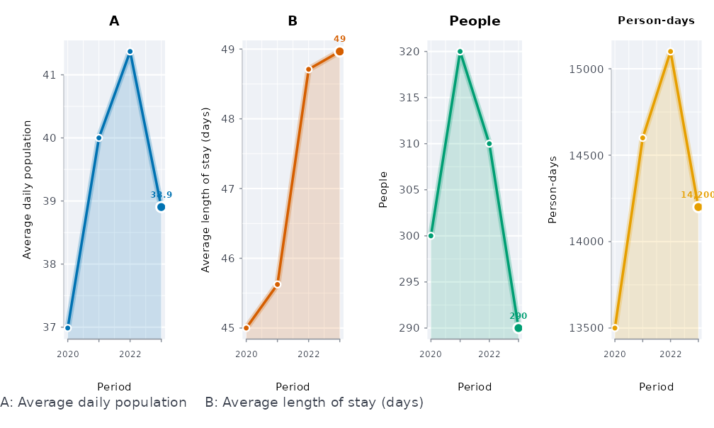
Period-over-period change with its interval, coloured by verdict:
y <- yoy(data.frame(year = 2018:2023, n = c(40, 44, 41, 55, 52, 61)), value = "n",
prd = "year")
plot(y)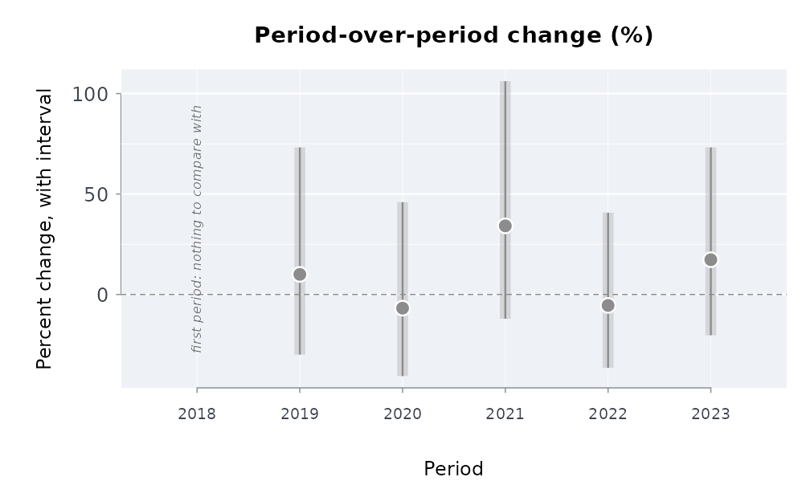
Small counts get their percentages too: each comes with its exact interval, as wide as the base is small. Only a zero base has no percentage, and its row says so.
plot(yoy(data.frame(year = 2019:2023, n = c(10, 12, 11, 15, 14)), value = "n", prd = "year"))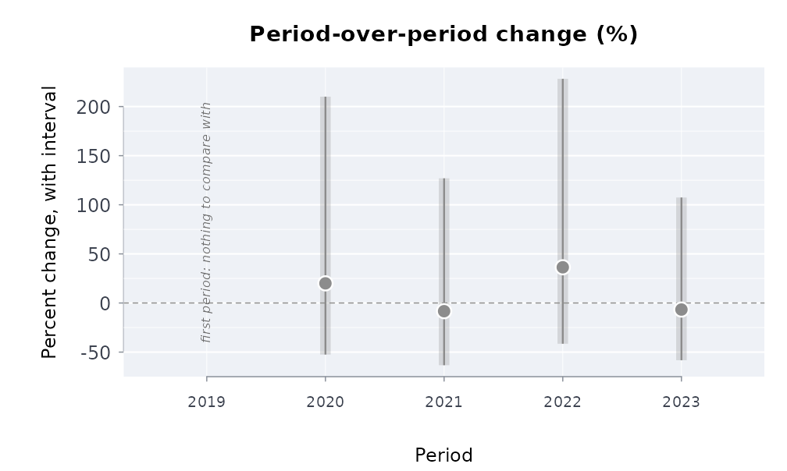
Rates with their intervals, and the change in a rate:
d <- data.frame(division = rep(c("north", "east", "west"), 2), year = rep(2022:2023, each = 3),
stops = c(120, 90, 60, 150, 85, 70), residents = c(1e4, 8e3, 5e3, 1e4, 8e3, 5e3))
plot(rtcalc(d[d$year == 2023, ], count = "stops", pop = "residents", by = "division"))
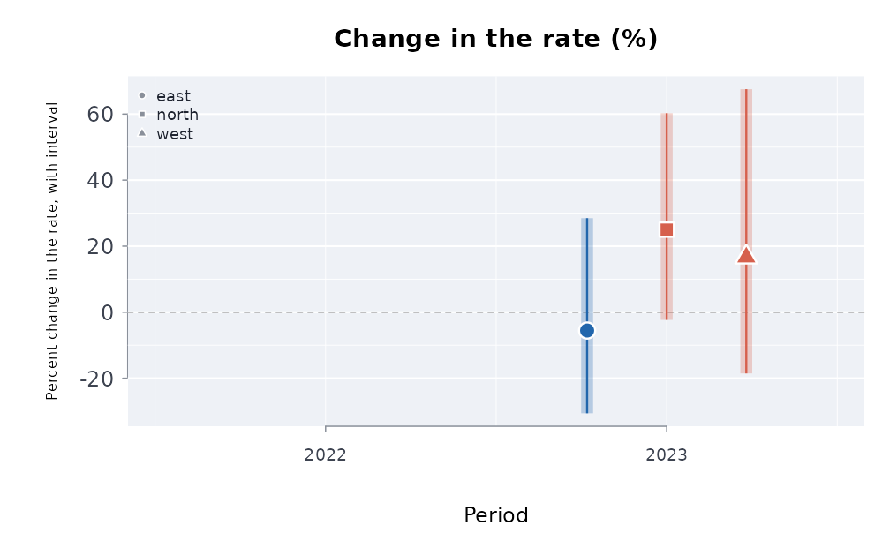
First digits against Benford’s law, the power curve of a check, and a permutation null:

dd <- data.frame(x = rnorm(120), y = rnorm(120))
shift <- function(z, s) {
z$y <- z$y + s * z$x
z
}
plot(cpspwr(dd, function(z) cor(z$x, z$y), inject = shift, trt = "x",
sizes = c(0, 0.2, 0.4, 0.6), n = 49, reps = 6, seed = 1))
Air pollution
The concentration-response curve with the exposure marked, the burden
it implies, and the whole vrfpol() report on one page
(curve, burden and the concentration curve of exposure over income):
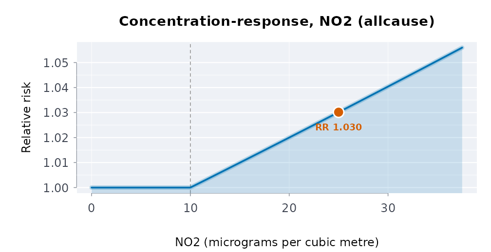

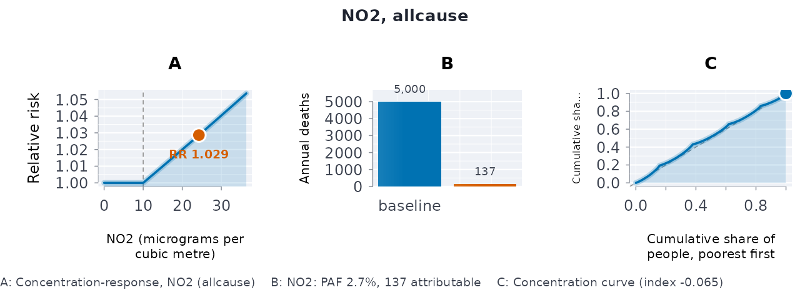
A plume on a grid, and the particle cloud of the random walk:
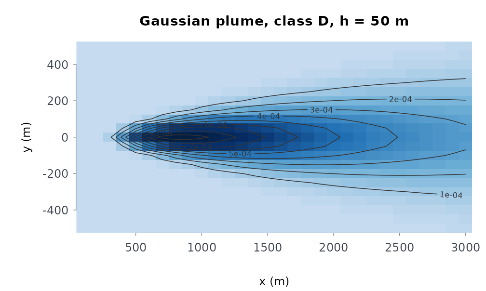
plot(lagrprt(500, 0, 0, u = 2, v = 0.5, kx = 1, ky = 1, dt = 1, nsteps = 60,
grid = c(0, 200, -60, 100, 40, 32)))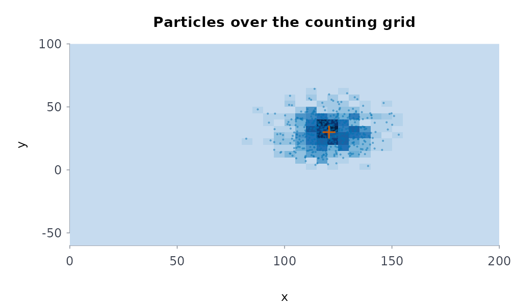
The footprint of a computation: CPU, memory and the total in one unit chosen to fit, with its everyday equivalents under the bars:
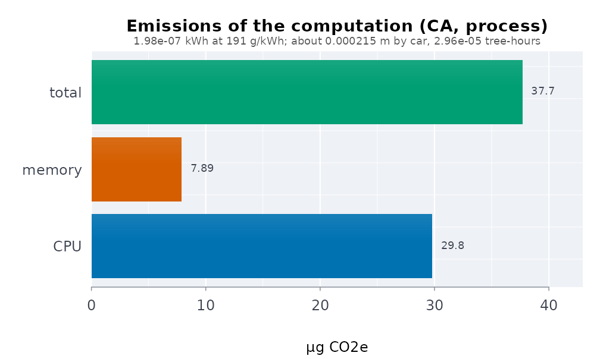
Courts and crime
The Ontario Court of Justice and Toronto Police Service data shipped
with the package (see vignette("applied-analyses") for the
analysis behind each one):
ext <- function(f) read.csv(system.file("extdata", f, package = "rmoriebricklayer"))
f <- ext("ocj_flow_ontario.csv")
d <- ext("ocj_time_to_disposition.csv")
x <- ext("ocj_dispositions.csv")
g <- ext("ocj_offence_groups.csv")
g <- g[g$year %in% c(2014, 2022), ]
b <- ext("tps_break_enter_d14_2024.csv")
b <- b[!is.na(b$lon), ]Cases received and disposed, and the clearance rate:

How long cases stay open, from the published time-to-disposition bands:

The mix of outcomes over the years:

A Simpson’s-paradox check: the parts’ rates, where the work moved, and the change split into rate and mix effects:
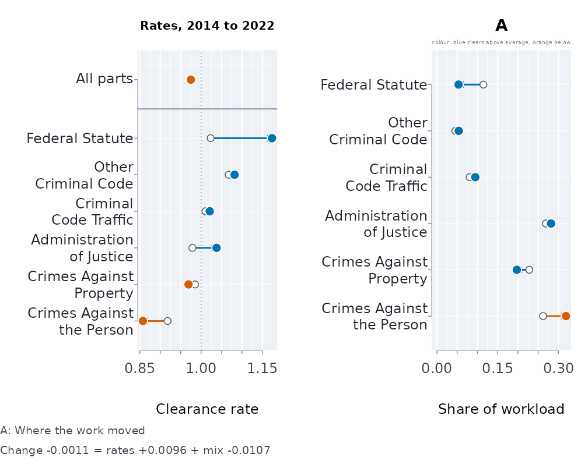
Where break-and-enters cluster, and whether they repeat near each other soon after:
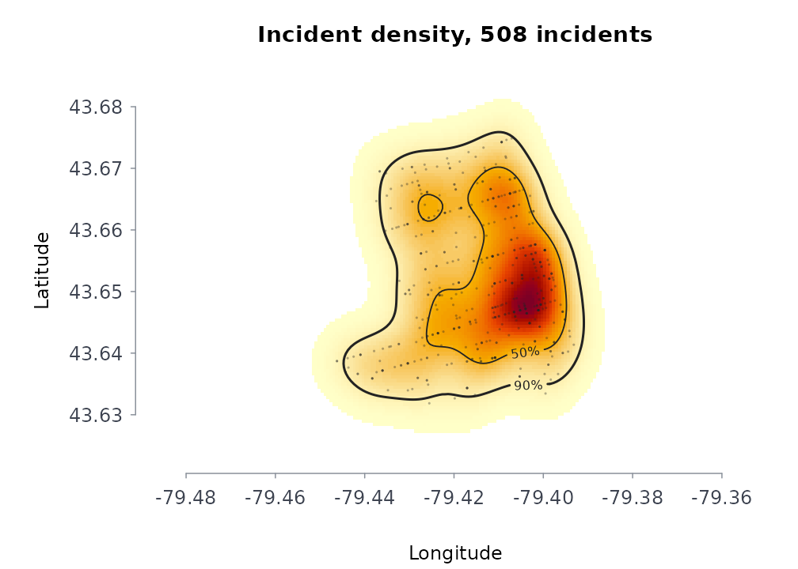
plot(knoxtst(b$lon, b$lat, as.Date(b$occ_date), c(100, 200, 400), c(7, 14, 28),
nsim = 99, seed = 1))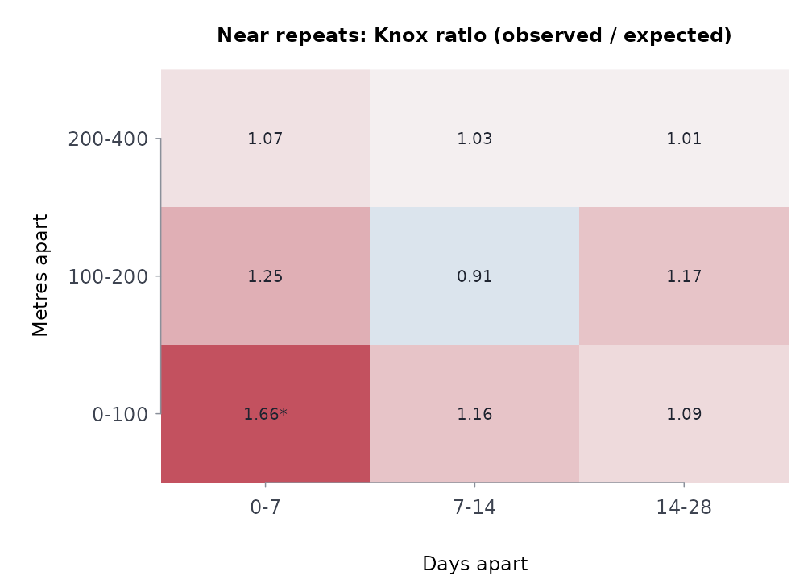
First Nations, Metis and Inuit health
Published Statistics Canada estimates bundled with the package
(?indiex; see vignette("applied-analyses") for
the methods and the governance behind them). Each group is drawn on its
own: the plots never pool First Nations, Metis and Inuit.
h <- indiex("health")
adults <- h[h$age == "Total, 18 years and over", ]
mh <- adults[adults$period == "2019/2022" & adults$indicator == "Perceived mental health, very good or excellent", ]Each group against non-Indigenous adults, with intervals from the published ones:

Perceived mental health on its whole scale (2022 Indigenous Peoples Survey):
r <- indiex("mentalhealth")
r <- r[r$region == "Canada", ]
plot(ordcmp(r, "group", "rating", "estimate", "lower", "upper",
lvls = c("Fair or poor", "Good", "Very good", "Excellent"),
ref = "M\u00e9tis", qual = "quality"))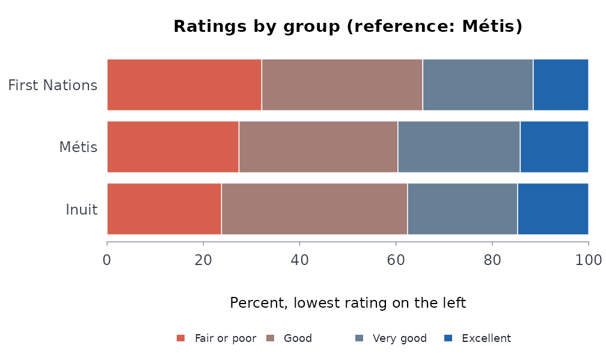
Wellness beside distress, and the two as separate axes (2024 well-being table):
wb <- indiex("wellbeing")
w <- welprof(wb, "group", "indicator", "estimate", "lower", "upper",
well = c("Always or often has a hopeful outlook",
"Sense of meaning and purpose rating of 8, 9 or 10"),
distress = c("Rarely or never has a hopeful outlook",
"Life satisfaction rating between 0 and 5"),
qual = "quality")
plot(w)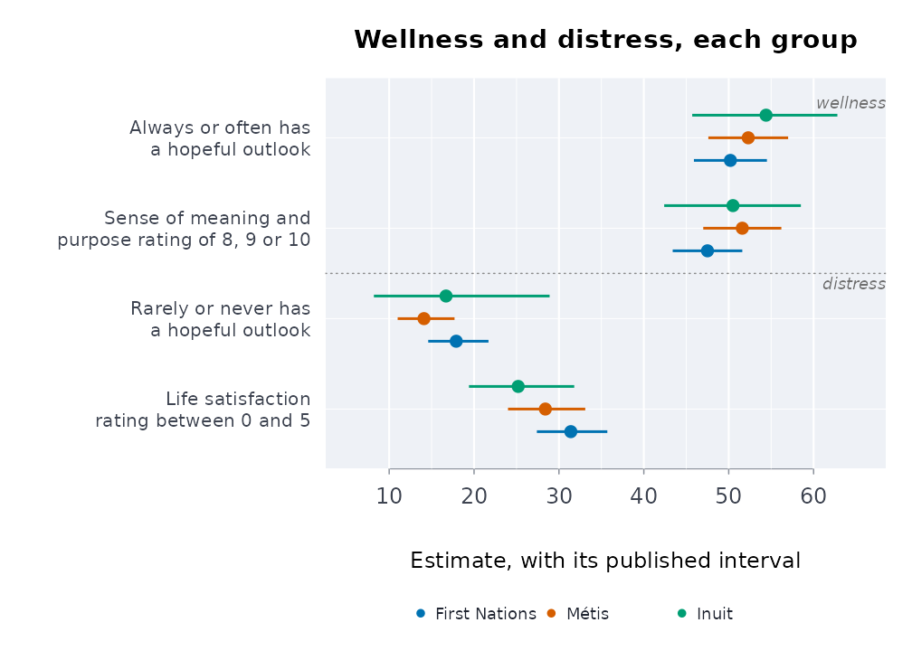
plot(dualcont(w, "Always or often has a hopeful outlook", "Life satisfaction rating between 0 and 5"))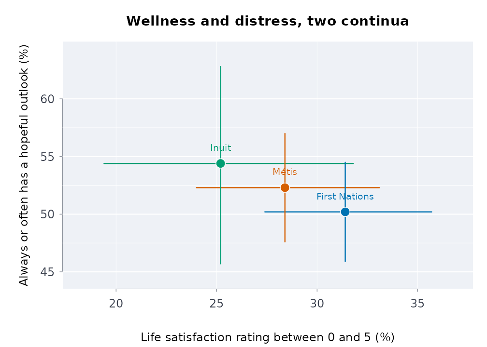
Change between the two survey periods, wellness first:
hc <- healchg(adults[adults$indicator %in% c("Perceived mental health, very good or excellent",
"Mood disorder"), ],
"group", "indicator", "period", "estimate", "lower", "upper",
from = "2015/2018", to = "2019/2022", qual = "quality",
well = "Perceived mental health, very good or excellent")
plot(hc)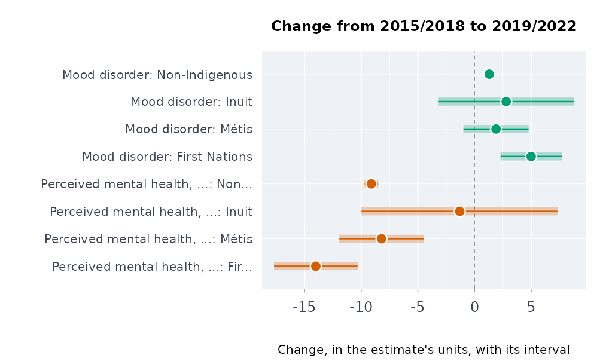
The Truth and Reconciliation Commission’s Calls to Action, completed and projected:

Evaluating a policy
The designs of vignette("statistical-methods"), on its
made-up panel of twenty districts where a reform arrives in three
stages: the outcome by adoption cohort before any model, the event
study, the Goodman-Bacon weights behind a two-way fixed-effects
estimate, and the randomisation null of the assignment.
p <- polex()
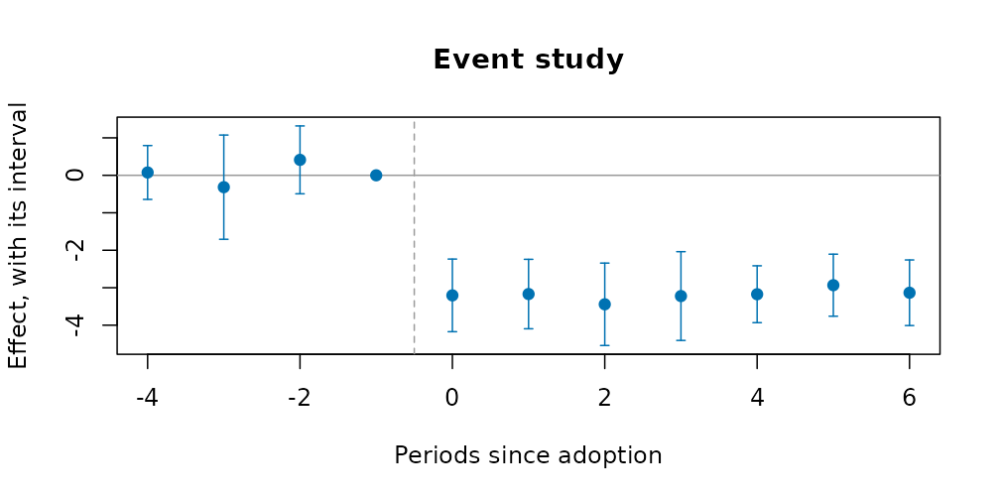
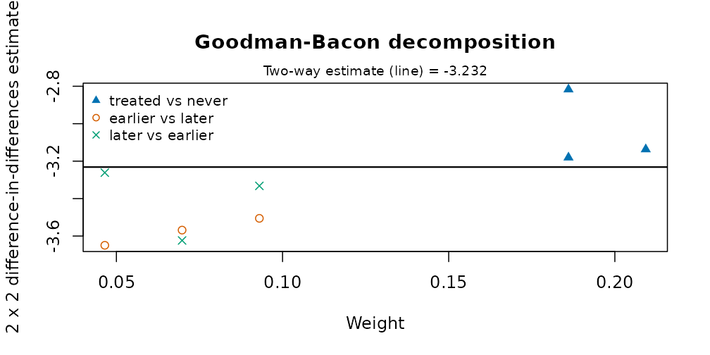
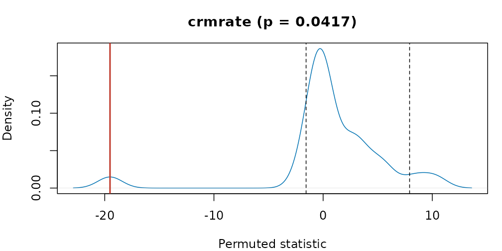
Whether one district drives the estimate, and a single treated place against its synthetic control and its synthetic difference in differences:

p13 <- p[is.na(p$refmonth) | p$district == "D13", ]
plot(synctl(p13, "district", "month", "crmrate", "D13", adopt = 13))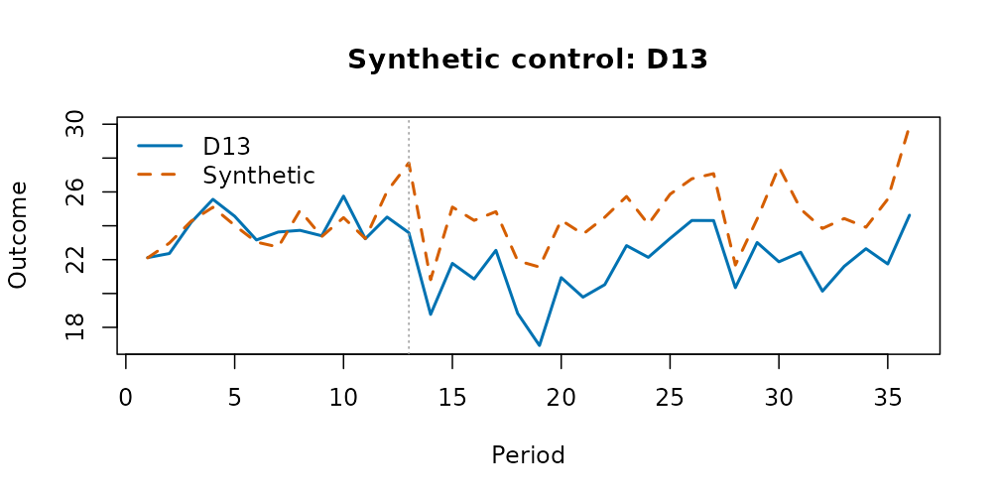

The power of the design on the untreated data, and the cross-fitted
AIPW estimate of vignette("statistical-methods") with its
overlap and balance checks:
plot(plnpwr(p[p$month <= 12, ], "district", "month", "crmrate", ntrt = 10, adopt = 7:10,
eff = c(0, 0.5, 1, 1.5), reps = 40, seed = 1))
set.seed(7)
n <- 600
d <- data.frame(age = runif(n, 18, 70), income = rnorm(n))
d$t <- rbinom(n, 1, plogis(-2 + 0.04 * d$age + 0.5 * d$income))
d$y <- 10 + 3 * d$t + 0.2 * d$age + d$income + rnorm(n)
fit <- aipwcf(d, "y", "t", c("age", "income"), lrn = "ols")
plot(fit)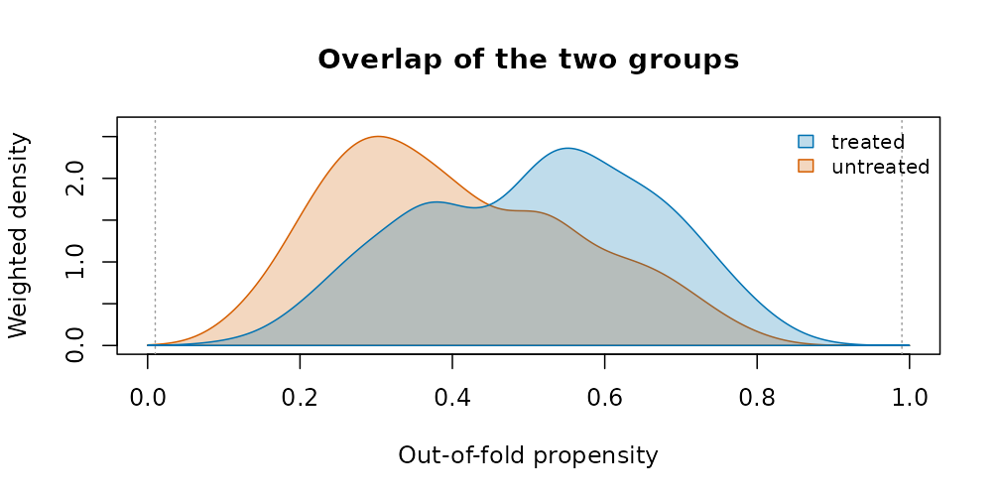
plot(fit, type = "estimate")
e <- pmin(pmax(attr(fit, "propensity")$propensity, 0.01), 0.99)
d$ipw <- ifelse(d$t == 1, 1 / e, 1 / (1 - e))
plot(baltab(d, "t", c("age", "income")), after = baltab(d, "t", c("age", "income"), w = "ipw"))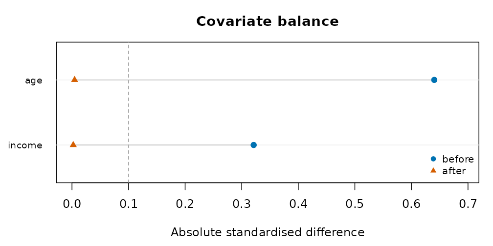
Customising
Every method takes main, col (or a
palette name), grid, and ... for
the base-graphics call. plotopt() sets the session
defaults; blpal() gives the colour-blind-safe sets the
package uses.
plot(sf, what = "alos", col = "firebrick", main = "Length of stay (days)", lwd = 3)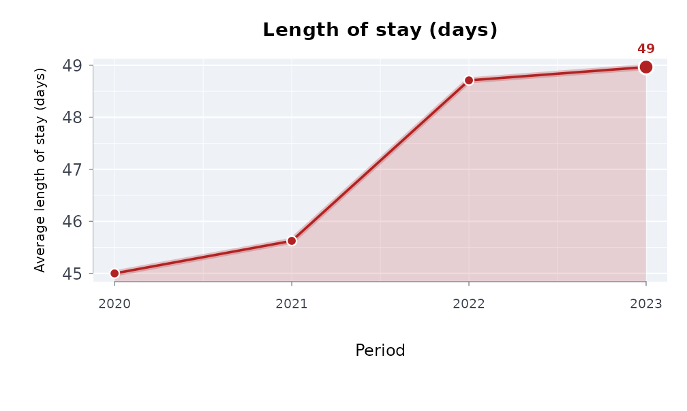

plotopt(palette = old$palette, grid = old$grid)
blpal("okabe", 4)
#> [1] "#0072B2" "#D55E00" "#009E73" "#E69F00"Every method returns the data it drew, invisibly:
drawn <- plot(y)
head(drawn, 3)
#> label pctchg lower upper verdict at
#> 1 2018 NA NA NA <NA> 2018
#> 2 2019 10.000000 -29.95683 73.20735 up 2019
#> 3 2020 -6.818182 -40.61975 45.94265 down 2020Results that are plain data frames have a plot function of their own: the Lorenz curve of a vector, and the funnel plot of observed against expected counts per area.